import matplotlib.pyplot as plt
import matplotlib.gridspec as gridspec
import numpy as np
import neurokit2 as nk
import yfinance as yf
import pandas as pd
import scienceplots
from scipy.integrate import cumulative_trapezoid
from tqdm import tqdm
%matplotlib inline7 Лабораторна робота № 7
Тема. Мультифрактальний аналіз складних систем
Мета. Навчитися використовувати мультифрактальний аналіз детрендованих флуктуацій для отримання індикаторів нелінійних змін у системі
7.1 Теоретичні відомості
7.1.1 Визначення мультифракталів
У цій лабораторній ми викладемо основи теорії мультифракталів — неоднорідних фрактальних об’єктів, для повного опису яких, на відміну від регулярних фракталів, недостатньо введення лише однієї величини, його фрактальної розмірності \(D\), а потрібен цілий спектр таких розмірностей, кількість яких, взагалі кажучи, нескінченна. Причина цього полягає в тому, що поряд із суто геометричними характеристиками, які визначаються величиною \(D\), такі фрактали характеризуються й деякими специфічними статистичними властивостями.
Простіше всього пояснити, що розуміється під “неоднорідним фракталом” на прикладі трикутника Серпинського, отриманого за допомогою методу випадкових ітерацій (Рис. 7.1).

Припустимо, що в методі випадкових ітерацій ми тепер із якоїсь причини віддали перевагу одній із вершин трикутника, наприклад, вершині А, і стали вибирати її з імовірністю 90%. Дві ж інші вершини В і С для нас рівноцінні, але на їхню частку тепер припадає всього лише по 5%. Результат такої несиметричної гри” зображено нижче на рисунку вище.
Видно, що точки всередині трикутника АВС розподілені тепер вкрай нерівномірно. Більша їх частина перебуває біля вершини А та її прообразів. Водночас у вершин В і С (і їхніх прообразів) їх є вкрай мало. Проте, за звичайною термінологією, ця множина точок (за умови прагнення числа ітерацій до нескінченності) є фракталом, тому що збереглася основна властивість фрактала — самоподібність. Дійсно, трикутник DFC, хоча в ньому у 20 разів менше точок, за своїми статистичними і геометричними властивостями повністю подібний до великого трикутника АВС. Так само, як і у великому трикутнику, точки в ньому концентруються здебільшого поблизу вершини D — аналогу вершини А.
Рис. 7.2 більш детально демонструє результуючий розподіл точок по трикутнику Серпинського. Цифри в кожному з маленьких трикутників показують його відносну заселеність точками множини.

Однак, не дивлячись на нерівномірність розподілу точок фрактала, фрактальна розмірність залишилась при цьому такою ж, \(D=\ln{3}/\ln{2}\). Покриття цієї множини все меншими трикутниками можна здійснити по тому ж алгоритму, що й раніше. Таке співпадіння змушує замислитись над пошуком нових кількісних характеристик, котрі могли б відрізнити нерівномірний розподіл точок від рівномірного.
Інший, складніший приклад неоднорідного фрактала, який ми б хотіли ще навести, показано на наступному рисунку. Ліворуч продемонстровано великий квадрат зі стороною, що дорівнює одиниці, який на цьому (нульовому) етапі повністю покриває собою деяку фрактальну множину точок \(M\). На наступному (першому) етапі, у центрі рисунка, показано, як ту саму множину можна покрити трьома меншими квадратами зі сторонами \(l_1=1/2, \ l_2=l_3=5/16\), у яких, відповідно, міститься частка \(p_1=1/2, \ p_2=1/3\) та \(p_3=1/6\) усіх точок.

Наступний етап покриття (зображений на рисунку праворуч) містить уже 9 квадратів зі сторонами \(l_{1}^{2}=1/4, \ l_{1}l_{2}=l_{1}l_{3}=5/32\) (у нижньому правому куті) і \(l_{2}l_{1}=5/32, \ l_{2}^{2}=l_{2}l_{3}=25/256\) (угорі праворуч і ліворуч). Відносна заселеність цих квадратів точками множини показана на рисунку. Вона відповідає добутку чинників заселеності (імовірностей): \(p_{1}^{2}=1/4, \ p_{1}p_{2}=1/6, \ p_{1}p_{3}=1/12\) — для нижньої правої групи, \(p_{2}p_{1}=1/6, \ p_{2}^{2}=1/9, \ p_{2}p_{3} = 1/18\) — для верхньої лівої та \(p_{3}p_{1}=1/12, \ p_{3}p_{2}=1/18, \ p_{3}^{2}=1/36\) — для верхньої правої групи. Зазначимо, що є чітка відповідність між заселеністю квадрата \(p_{j}p_{i}\) і його розмірами \(l_{i}l_{i}\).
Подальший процес розбиття і покриття множини \(M\) здійснюється згідно із цією ренормалізаційною схемою. Кожен квадрат, що має на \(n\)-му кроці розмір \(l\) і заселеність \(р\), замінюється на \(n+1\) кроці трьома квадратами з розмірами \(ll_{1}, \ ll_{2}, \ ll_{3}\) і заселеностями \(pp_{1}, \ pp_{2}, \ pp_{3}\) відповідно, розміщеними таким самим чином відносно один одного, як показано на Рис. 7.3.
Двоє з розглянутих вище випадки являють собою приклади неоднорідних фракталів. Під словом “неоднорідний” ми тут розуміємо нерівномірний розподіл точок множини по фракталу або нерівномірний розподіл малих та великих флуктуацій у часовому ряді. Причина неоднорідності в попередніх випадках одна й та сама — різні ймовірності заповнення геометрично однакових елементів фрактала, або в загальному випадку невідповідність імовірностей заповнення геометричним розмірам відповідних областей. Такі неоднорідні фрактальні об’єкти в літературі називають мультифракталами, і їх вивченням ми й займемося надалі.
7.1.2 Узагальнені фрактальні розмірності \(D_{q}\)
Дамо загальне визначення мультифрактала. Розглянемо фрактальний об’єкт, що займає якусь обмежену ділянку \(\Omega\) розміру \(L\) у Евклідовому просторі з розмірністю \(d\). Нехай на якомусь етапі його побудови він являє собою множину з \(N \gg 1\) точок, якось розподілених у цій області. Ми будемо припускати, що врешті-решт \(N \to \infty\). Прикладом такої множини може слугувати трикутник Серпінського, побудований методом випадкових ітерацій. Кожен крок ітераційної процедури додає до цієї множини одну нову точку.
Розіб’ємо всю область \(\Omega\) на кубічні клітинки зі стороною \(\varepsilon \ll L\) та об’ємом \(\varepsilon^{d}\). Далі нас будуть цікавити тільки зайняті клітинки, у яких міститься хоча б одна точка. Нехай номер зайнятих комірок \(i\) змінюється в межах \(і=1, 2,..., N(\varepsilon)\), де \(N(\varepsilon)\) — сумарна кількість зайнятих клітинок, яка, звісно, залежить від розміру клітинки \(\varepsilon\).
Нехай \(n_{i}(\varepsilon)\) представляє собою кількість точок у клітинці з номером \(i\), тоді величина \(p_{i}(\varepsilon) = \lim_{N\to\infty}n_{i}(\varepsilon)/{N}\) представляє собою ймовірність того, що навмання взята точка з нашої множини знаходиться в комірці \(i\). Інакше кажучи, ймовірності \(р_{i}\) характеризують відносну заселеність комірок. З умови нормування ймовірності випливає, що
\[ \sum_{i=1}^{N(\varepsilon)}p_{i}(\varepsilon)=1. \]
Уведемо тепер у розгляд узагальнену статистичну суму \(Z(q,\varepsilon)\), що характеризується показником ступеня \(q\), який може набувати будь-яких значень в інтервалі \(-\infty<q<+\infty\)
\[ Z(q,\varepsilon)=\sum_{i=1}^{N(\varepsilon)}p_{i}^{q}(\varepsilon). \]
Спектр узагальнених фрактальних розмірностей \(D_{q}\), що характеризує даний розподіл точок в області \(\Omega\), визначається за допомогою співвідношення \(D_{q} = \tau(q)\big/(q-1)\), де функція \(\tau(q)\) має вид
\[ \tau(q)=\lim_{\varepsilon\to 0} \ln{Z(q,\varepsilon)} \big/ \ln{\varepsilon}. \]
Як ми покажемо нижче, якщо \(D_{q}=D=\text{const}\), тобто не залежить від \(q\), то дана множина точок являє собою звичайний, регулярний фрактал, який характеризується лише однією величиною — фрактальною розмірністю \(D\). Навпаки, якщо функція \(D_{q}\) якось змінюється з \(q\), то розглянута множина точок представляє мультифрактал.
Таким чином, мультифрактал у загальному випадку характеризується деякою нелінійною функцією \(\tau(q)\), що визначає поведінку статистичної суми \(Z(q,\varepsilon)\) при \(\varepsilon\to 0\)
\[ Z(q,\varepsilon)=\sum_{i=1}^{N(\varepsilon)}p_{i}^{q}(\varepsilon) \approx \varepsilon^{\tau(q)}. \tag{7.1}\]
Слід мати на увазі, що в реальній ситуації ми завжди маємо скінченне, хоча й дуже велике число дискретних точок \(N\), тому при комп’ютерному моделюванні конкретної множини граничний перехід \(\varepsilon\to 0\) треба виконувати з обережністю, пам’ятаючи, що йому завжди передує ліміт \(N \to 0\).
Покажемо тепер, як поводиться узагальнена статистична сума у випадку звичайного регулярного фрактала з фрактальною розмірністю \(D\). У цьому випадку в усіх зайнятих комірках міститься однакова кількість точок, \(n_{i}(\varepsilon) = N \big/ N(\varepsilon)\), тобто фрактал представляється однорідним. Тоді очевидно, що відносні населеності клітинок, \(p_{i}(\varepsilon)=1/N(\varepsilon)\), також однакові, і узагальнена статистична сума набуває вигляду
\[ Z(q,\varepsilon) = N^{1-q}(\varepsilon). \tag{7.2}\]
Врахуємо тепер, що, згідно визначеню фрактальної розмірності \(D\), кількість зайнятих клітинок при достатньо малому \(\varepsilon\) поводить себе наступним чином:
\[ N(\varepsilon) \approx \varepsilon^{-D}. \tag{7.3}\]
Підставляючи (7.3) у (7.2), і порівнюючи з (7.1), отримуємо
\[ \varepsilon^{\tau(q)} = \varepsilon^{-D(1-q)} \to \tau(q)=(q-1)D. \tag{7.4}\]
Ми приходимо до висновку, що у випадку звичайного фрактала функція (7.4) є лінійною. Тоді всі \(D_{q}\) дійсно не залежать від \(q\). Фрактал у якого всі узагальнені фрактальні розмірності \(D_{q}\) співпадають називається монофракталом.
Якщо розподіл точок по клітинкам неоднаковий, тоді фрактал називається неоднорідним, тобто представляє із себе мультифрактал, і для його характеристики необхідний цілий спектр узагальнених фрактальних розмірностей \(D_{q}\), кількість котрих, у загальному випадку, нескінченна.
Так, наприклад, при \(q \to +\infty\) основний внесок в узагальнену статистичну суму (7.1) вносять комірки, що містять найбільшу кількість частинок \(n_{i}\) у них і, відповідно, що характеризуються найбільшою ймовірністю їх заповнення \(p_{i}\). Навпаки, при \(q \to -\infty\) основний внесок в узагальнену статистичну суму вносять найбільш розрідженні комірки з найменшою ймовірністю їх заповнення \(p_{i}\). Таким чином, функція \(D_{q}\) показує, наскільки неоднорідним представляється досліджувана множина точок \(\Omega\).
У подальшому для характеристики розподілу точок необхідно знати не тільки функцію \(\tau(q)\), але і її похідну:
\[ \frac{d\tau(q)}{dq} = \lim_{\varepsilon\to 0} \sum_{i=1}^{N(\varepsilon)}p_{i}^{q}\ln{p_{i}} \Bigg/ \left( \sum_{i=1}^{N(\varepsilon)}p_{i}^{q} \right)\ln{\varepsilon}. \]
Ця похідна має важливий фізичний зміст, який буде продемонстровано пізніше. Зараз знову зазначимо, що для мультифрактальної системи вона не залишається константною і змінюється з \(q\).
7.1.3 Функція мультифрактального спектра \(f(\alpha)\)
7.1.3.1 Спектр фрактальних розмірностей
У попередньому пункті ми ввели поняття мультифрактала — об’єкта, що представляє собою неоднорідний фрактал. Для його опису ми ввели множину узагальнених фрактальних розмірностей \(D_{q}\), де \(q\) приймає будь-які значення в інтервалі \(-\infty<q<+\infty\). Однак величини \(D_{q}\) не є, строго кажучи, фрактальними розмірностями в загальному розумінні цього слова.
Тому часто поряд із ними для характеристики мультифрактальної множини використовують так звану функцію мультифрактального спектра \(f(\alpha)\) (спектр сингулярностей мультифрактала), до якої, як ми побачимо надалі, більше підходить термін фрактальна розмірність. Ми покажемо, що величина \(f(\alpha)\) фактично дорівнює хаусдорфовій розмірності якоїсь однорідної фрактальної підмножини із вихідної множини \(\Omega\), що дає домінантний внесок у статистичну суму при заданій величині \(q\).
Однією з основних характеристик мультифрактала є набір імовірностей \(р_{i}\), що показують відносну заселеність клітинок \(\varepsilon\), якими ми покриваємо цю множину. Чим менший розмір клітинки, тим менша величина її заселеності. Для самоподібних множин залежність \(p_{i}\) від розміру клітинки \(\varepsilon\) має степеневий характер:
\[ p_{i}(\varepsilon) \approx \varepsilon^{\alpha_{i}}, \]
де \(\alpha_{i}\) являє собою деякий показник ступеня (різний для різнок клітинок \(i\)).
Додатково по \(\alpha\)
Спрямовуючи значення \(\varepsilon\) до нуля, фрактальність можна розглядати локально для кожної точки (елемента) досліджуваної системи, і таким чином показник \(\alpha\) є локальною фрактальною розмірністю. Його ще називають показником Гьолдера або силою сингулярності
Можемо спостерігати саме степеневу залежність, оскільки, вочевидь, розподіл маси (флуктуацій) концентрується з різною “силою” \(\alpha\), тож і ймовірнісна міра змінюється пропорційно розмірам вікон \(\varepsilon\)

Сірий масштаб являє собою ймовірнісну міру для кожної локації, як показано на кожній панелі. На рисунку (a) тільки \(i\)-та локація має ненульову щільність, інші місця порожні. Імовірнісна міра на комірці залишається \(\rho\), навіть коли розмір клітинки \(\varepsilon\) збільшується. \(\varepsilon\) збільшується, що підкреслюється жирною лінією. Проте, через те, що далі ми не спостерігаємо зростання щільності, показник \(\alpha\) залишається нульовим. На Рис. 7.22 (b) усі комірки мають однакову щільність. Імовірнісні міри комірок дорівнюють \(\rho\), \(9\rho\) і \(25\rho\) для найменшої, другої найменшої та найбільшої комірки (виділено жирною лінією). Таким чином, сила сингулярності \(i\)-го осередку дорівнює 2. На Рис. 7.22 (c) \(i\)-й осередок є розрідженим порівняно з навколишніми осередками. Імовірнісна міра осередків дорівнює \(\rho\), \(27\rho\) і \(125\rho\) для найменшого, другого найменшого і найбільшого осередку (виділено жирною лінією). Таким чином, сила сингулярності \(i\)-ої комірки дорівнює 3.
Додатково по \(\alpha\)
Можна сказати, що чим більш гладкою видається поверхня системи, чим менше елементів задіяно в її розвитку, тим меншим є показник сингулярності. Що більше елементів системи вступають у взаємозв’язок один з одним, що більше процесів протікає під час еволюції системи, то більшим є показник сингулярності
Відомо, що для регулярного (однорідного) фрактала всі показники ступеня \(\alpha_{i}\) однакові й рівні фрактальній розмірності \(D\):
\[ p_{i} = 1 \big/ N(\varepsilon) \approx \varepsilon^{D}. \]
У даному випадку статистична сума Рівняння 7.1 приймає наступний вигляд:
\[ Z(q,\varepsilon) = \sum_{i=1}^{N(\varepsilon)}p_{i}^{q}(\varepsilon) = N(\varepsilon)\varepsilon^{Dq}=\varepsilon^{-D}\varepsilon^{Dq} \approx \varepsilon^{D(q-1)}. \]
Тому \(\tau(q)=D(q-1)\) і всі узагальнені фрактальні розмірності \(D_{q}=D\) у цьому випадку співпадають та не залежать від \(q\).
Однак, для такого складного об’єкта, як мультифрактал, унаслідок його неоднорідності, ймовірності заповнення клітинок \(p_{i}\) у загальному випадку різняться, і показник ступеня \(\alpha_{i}\) для різних клітинок може приймати різні значення. Достатньо типовою є ситуація, коли ці значення неперервно заповнюють деякий закритий інтервал \(\left( \alpha_{min}, \alpha_{max} \right)\), причому \(p_{min} \approx \varepsilon^{\alpha_{max}}\), a \(p_{max} \approx \varepsilon^{\alpha_{min}}\).
Тепер перейдемо до питання розподілу ймовірностей різних значень \(\alpha_{i}\). Нехай \(n(\alpha)d\alpha\) є ймовірністю того, що \(\alpha_{i}\) знаходиться в інтервалі від \(\alpha\) до \(\alpha+d\alpha\). Іншими словами, \(n(\alpha)d\alpha\) представляє собою відносну кількість клітинок \(i\), що характеризуються однією і тією самою мірою \(p_{i}\) з \(\alpha_{i}\), що лежать у цьому інтервалі. У випадку монофрактала, для котрого всі \(\alpha_{i}\) однакові (і рівні фрактальній розмірності \(D\)), це число, очевидно, пропорційно повній кількості клітинок \(N(\varepsilon) \approx \varepsilon^{-D}\), степеневим чином залежних від розміру клітинки \(\varepsilon\). Показник степеня в цьому співвідношені визначається фрактальною розмірністю множини \(D\).
Для мультифрактала, однак, це не так, і різні значення \(\alpha_{i}\) зустрічаються з ймовірністю, що характеризується не однією і тією ж величиною \(D\), а різними (в залежності від \(\alpha\)) значеннями показниками степеня \(f(\alpha)\),
\[ n(\alpha) \approx \varepsilon^{-f(\alpha)}. \tag{7.5}\]
Таким чином, фізичний сенс функції \(f(\alpha)\) полягає в тому, що вона представляє собою розмірність Хаусдорфа деякої однорідної підмножини \(\Omega_{\alpha}\) із вихідної множини \(\Omega\), що характеризується однаковими ймовірностями заповнення клітинок \(p_{i} \approx \varepsilon^{\alpha}\). Оскільки фрактальна розмірність підмножини очевидно завжди менша або рівна фрактальній розмірності вихідної множини \(D_{0}\), має місце важлива нерівність для функції \(f(\alpha)\):
\[ f(\alpha) \leq D_{0}. \]
У результаті можна зробити висновок, що множина різних значень функції \(f(\alpha)\) (при різних \(\alpha\)) представляє собою спектр фрактальних розмірностей [1,2] однорідних підмножин \(\Omega_{\alpha}\), на які можна розбити вихідну множину \(\Omega\), кожна з яких характеризується власним значенням фрактальної розмірності \(f(\alpha)\).
7.1.3.2 Перетворення Лежандра
Встановимо зв’язок функції \(f(\alpha)\) із введенною раніше функцією \(\tau(q)\). Обчислимо для цього статистичну суму \(Z(q,\varepsilon)\). Підставляючи у \(Z(q,\varepsilon)\) ймовірності \(p_i \approx \varepsilon^{\alpha_i}\), та переходячи від підсумовування по \(i\) до інтегрування по \(\alpha\) з щільністю ймовірностей (7.5), отримаємо
\[ Z(q,\varepsilon) = \sum_{i=1}^{N(\varepsilon)} p_{i}^{q}(\varepsilon) \approx \int d\alpha n(\alpha)\varepsilon^{q\alpha} \approx \int d\alpha\varepsilon^{q\alpha-f(\alpha)}. \tag{7.6}\]
Так як величина \(\varepsilon\) дуже мала, основний внесок у цей інтеграл вноситимуть ті значення \(\alpha(q)\), при яких показник степеня \(q\alpha-f(\alpha)\) виявляється мінімальним (а підінтегральна функція — максимальною). Цей вклад буде пропорційним значенню підінтегральної функції у точці максимума. Саме ж значення \(\alpha(q)\) визначається при цьому з наступної умови:
\[ \left. \frac{d}{d\alpha}[ q\alpha-f(\alpha) ] \right \vert_{\alpha=\alpha(q)} = 0. \]
Також, з умови мінімуму ми маємо
\[ \left. \frac{d^{2}}{d\alpha^{2}}[ q\alpha-f(\alpha) ] \right \vert_{\alpha=\alpha(q)} > 0. \]
У результаті отримуємо, що залежність \(\alpha(q)\) неявним чином визначається з \(q = df(\alpha) \big/ d\alpha\), і що функція \(f(\alpha)\) усюди є випуклою:
\[ f^{''}(\alpha)>0. \]
Це значить, що величина \(f(\alpha(q))\) дійсно є фрактальною розмірністю підмножини \(\Omega_{\alpha(q)}\), що має найбільший домінуючий внесок у статистичну суму (7.6) при заданій величині показника ступеня \(q\).
Оскільки \(Z(q,\varepsilon)=\tau(q)\), приходимо до висновку, що
\[ \tau(q) = q\alpha(q) - f(\alpha(q)). \tag{7.7}\]
Пам’ятаючи, що \(\tau(q)=D(q-1)\), можемо віднайти функцію \(D_{q}\):
\[ D_{q} = \frac{1}{q-1}[ q\alpha(q)-f(\alpha(q)) ]. \tag{7.8}\]
Таким чином, якщо ми знаємо функцію мультифрактального спектра \(f(\alpha)\), то за домомогою співвідношень (7.8) та (7.9) ми можемо знайти функцію \(D_{q}\). Навпаки, знаючи \(D_{q}\), ми можемо відтворити залежність \(\alpha(q)\) за допомогою рівняння
\[ \alpha(q) = \frac{d}{dq}[(q-1)D_{q}] \tag{7.9}\]
і після цього знайти із (7.9) \(f(\alpha(q))\). Ці два рівняння і визначають функцію \(f(\alpha)\).
\[ \frac{d\tau}{dq}\frac{dq}{d\alpha} = q + \alpha\frac{dq}{d\alpha} - \frac{df}{d\alpha}. \]
Приймаючи до уваги, що \(q=df/d\alpha\), і скорочуючи це рівняння на \(dq/d\alpha\), приходимо до співвідношення
\[ \alpha = \frac{d\tau(q)}{dq}, \]
яке еквівалентне (7.9).
Вирази для \(\tau(q)\) та \(\alpha(q)\) задають перетворення Лежандра [3,4] від змінних \(\{ q, \tau(q) \}\) до змінних \(\{\alpha, f(\alpha)\}\): \(\alpha = d\tau \big/ dq\) та \(f(\alpha) = q\left( d\tau \big/ dq \right) - \tau(q)\). Як відомо, для однорідного фрактала \(D_{q}=D=\text{const}\). Тому \(\alpha=d\tau/dq=D\) і \(f(\alpha)=q\alpha-\tau(q)=qD-D(q-1)=D\). У цьому випадку “графік” функції \(f(\alpha)\) на площині \(\left( \alpha, f(\alpha) \right)\) складається лише з однієї точки \(\left( D, D \right)\).
7.1.4 Мультифрактальний аналіз детрендованих флуктуацій
Монофрактальні та мультифрактальні структури фінансових сигналів є особливим різновидом масштабно-інваріантних структур. Найчастіше монофрактальна структура фінансових часових рядів визначається одним степеневим показником і передбачає, що масштабо-інваріантність не залежить від часу і простору. Однак, часто ми маємо змогу спостерігати просторово-часову варіацію масштабно-інваріантної структури досліджуваної складної системи. Ці просторово-часові варіації вказують на мультифрактальність фінансового сигналу, яка визначається мультифрактальним спектром. Мультифрактальний спектр може допомогти кількісно визначити асиметрію підйомів та спадів на фондовому чи криптовалютному ринках, передбачити фінансову кризу, що поступово наближується, і, таким чином, сприяти успішності подальших торгівельних рішень. Основна мета цього розділу — представити одну з найточніших процедур для визначення множини фрактальних показників — мультифрактальний аналіз детрендованих флуктуацій (multifractal detrended fluctuation analysis, MFDFA) [5–7], котрий і досі залишається одним із найпотужніших методів для аналізу систем різної природи та складності [8–21].
Побудова MFDFA складається з 9 кроків:
- “Шум і випадкові блукання у часовому ряді” представляє метод приведення часового ряду до такого, що подібний до випадкового блукання.
- “Обчислення середньоквадратичної варіації часового ряду” представляє середньоквадратичну варіацію, яка є основною процедурою для подальших обчислень в MFDFA і типовим способом обчислення середньої варіації часових рядів різної природи.
- “Локальна середньоквадратична варіація часового ряду” представляє обчислення локальної варіації часового ряду як середньоквадратичного відхилення часового ряду в межах сегментів, що можуть як перекриватися, так і не перекриватися.
- “Локальне детрендування часового ряду” представляє обчислення такого ж локального середньоквадратичного відхилення навколо трендів, які часто зустрічаються у фінансових часових рядах.
- “Монофрактальний аналіз детрендованих флуктуацій”: амплітуди локальних середніх квадратичних відхилень підсумовуються в узагальнене середнє квадратичне відхилення. У сумарному середньоквадратичному відхиленні для сегментів з малими розмірами вибірки переважають швидкі флуктуації часового ряду. На противагу цьому, у сумарному середньоквадратичному відхиленні для сегментів з великими розмірами вибірки переважають повільні коливання. Степенева залежність між загальним середнім квадратичним відхиленням для декількох розмірів вибірки (тобто масштабів) визначається за допомогою монофрактального аналізу дентрендованих флуктуацій (monofractal detrended fluctuation analysis, DFA) і називається показником Херста (Hurst exponent, \(H\)).
- “Мультифрактальний аналіз детрендованих флуктуацій”: MFDFA отримують шляхом розширення на \(q\)-й порядок узагальненого середньоквадратичного відхилення. Середньоквадратичне відхилення \(q\)-го порядку може розрізняти сегменти з малими та великими флуктуаціями. Степенева залежність між середньоквадратичним відхиленням \(q\)-го порядку чисельно визначається як узагальнейний показник Херста \(q\)-го порядку.
- “Мультифрактальний спектр часових рядів”: на основі показника Херста \(q\)-го порядку обчислено декілька мультифрактальних спектрів.
- “Узагальнені фрактальні розмірності” представляє більш детальний опис показників \(D_{q}\), що будуть описані в подальшому.
- “Аналогії мультифракталів із термодинамікою” показує, що отримані кількісні мультифрактальні показники мають зв’язок із термодинамічними показниками, що дозволило нам вивести мультифрактальну “теплоємність”.
Для подальшої візуалізації кожного кроку процедури MFDFA імпортуємо наступні модулі:
І виконаємо налаштування рисунків для виведення:
plt.style.use(['science', 'notebook', 'grid']) # стиль, що використовуватиметься
# для виведення рисунків
params = {
'figure.figsize': (8, 6), # встановлюємо ширину та висоту рисунків за замовчуванням
'font.size': 24, # розмір фонтів рисунку
'lines.linewidth': 2, # товщина ліній
'axes.titlesize': 'small', # розмір титулки над рисунком
'font.family': "Times New Roman", # сімейство стилів підписів
'font.serif': ["Times"], # стиль підпису
'mathtext.fontset': "dejavuserif", # стиль математичних виразів
'savefig.dpi': 300 # якість збережених зображень
}
plt.rcParams.update(params) # оновлення стилю згідно налаштуваньЦього разу розглянему можливість побудови індикаторів або індикаторів-передвісників на прикладі індексу сирої нафти West Texas Intermediate (WTI). При описі процедури MFDFA порівнюватимемо мультифрактальність даного ряду зі штучно згенерованими монофрактальними рядами, складність яких, очевидно, має бути меншою.
Сам сайт Yahoo! Finance містить досить коротку історію щодених цін на нафту даної марки. Цього разу, в якості альтернативного прикладу, будемо послуговуватись альтернативним джерелом фінансових даних — федеральним резервом економічних даних федерального резервного банку Сент-Луїса (Federal Reserve Economic Data of the Federal Reserve Bank of St. Louis, FRED). На Python було створено бібліотеку для вивантаження даних із даного джерела — pandas-datareader. Для її встановлення достатньо прописати наступну команду:
!pip install pandas-datareaderТепер імпортуємо відповідну бібліотеку:
import pandas_datareader.data as webта виконаємо зчитування індексу з FRED, використовуючи функціонал даної бібліотеки. Завантажимо дані за весь період, що нам буде доступний:
symbol = 'DCOILWTICO' # cимвол індексу, як указано на сайті FRED
start = "1986-01-01" # Дата початку зчитування даних
end = "2023-01-21" # Дата закінчення зчитування даних
wti = web.DataReader(symbol, 'fred', start, end) # зчитуємо значення ряду
time_ser = wti[symbol].copy() # зберігаємо саме ціни закриття
xlabel = 'time, days' # підпис по вісі Ох
ylabel = symbol # підпис по вісі ОуВиведемо досліджуваний ряд:
fig, ax = plt.subplots() # Створюємо порожній графік
ax.plot(time_ser.index, time_ser.values) # Додаємо дані до графіку
ax.legend([symbol]) # Додаємо легенду
ax.set_xlabel(xlabel) # Встановимо підпис по вісі Ох
ax.set_ylabel(ylabel) # Встановимо підпис по вісі Oy
plt.xticks(rotation=45) # оберт позначок по осі Ох на 45 градусів
plt.savefig(f'{symbol}.jpg') # Зберігаємо графік
plt.show(); # Виводимо графік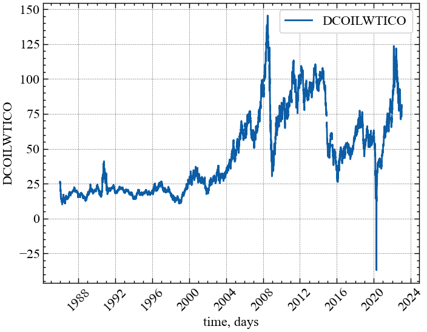
Розглянемо опис нашого масиву даних:
time_ser.describe()count 9336.000000
mean 46.078743
std 29.597897
min -36.980000
25% 19.990000
50% 35.955000
75% 67.242500
max 145.310000
Name: DCOILWTICO, dtype: float64На представленому рисунку видно, що в значеннях досліджуваного індексу існують пропуски та негативні значення на ціну нафти. Для того, щоб позбутися від’ємного значення, можна виконати заміну значення на таке, що близьке до нуля. Для видалення значень NaN достатньо скористатися методом dropna() бібліотеки pandas.
time_ser = time_ser.dropna() # видаляємо значення NaN
time_ser[time_ser.values<0] = 5 # замінюємо від'ємне значення на 5Знову візуалізуємо результат:
fig, ax = plt.subplots() # Створюємо порожній графік
ax.plot(time_ser.index, time_ser.values) # Додаємо дані до графіку
ax.legend([symbol]) # Додаємо легенду
ax.set_xlabel(xlabel) # Встановимо підпис по вісі Ох
ax.set_ylabel(ylabel) # Встановимо підпис по вісі Oy
plt.xticks(rotation=45) # оберт позначок по осі Ох на 45 градусів
plt.savefig(f'{symbol}_filtered.jpg') # Зберігаємо графік
plt.show(); # Виводимо графік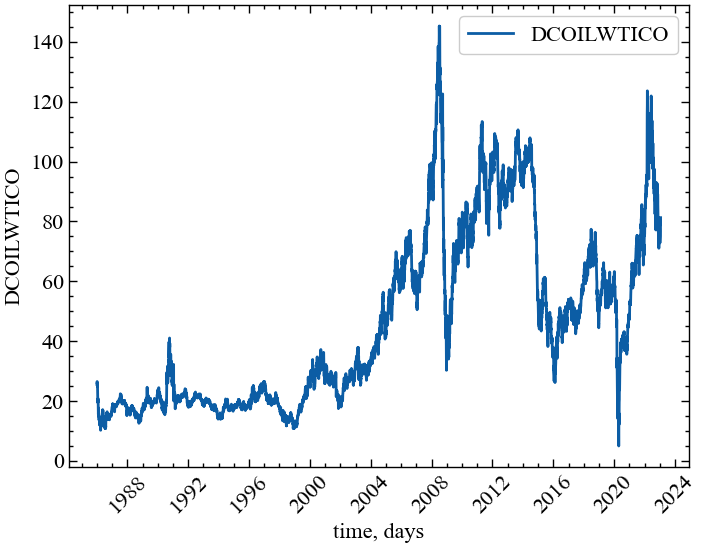
Останнє, що нам залишається, це приведення вихідного ряду до прибутковостей. Для цього визначимо функцію transformation() та знайдемо з її допомогою прибутковості:
def transformation(signal, ret_type):
for_rec = signal.copy()
if ret_type == 1: # Зважаючи на вид ряду, виконуємо
# необхідні перетворення
pass
elif ret_type == 2:
for_rec = for_rec.diff()
elif ret_type == 3:
for_rec = for_rec.pct_change()
elif ret_type == 4:
for_rec = for_rec.pct_change()
for_rec -= for_rec.mean()
for_rec /= for_rec.std()
elif ret_type == 5:
for_rec = for_rec.pct_change()
for_rec -= for_rec.mean()
for_rec /= for_rec.std()
for_rec = for_rec.abs()
elif ret_type == 6:
for_rec -= for_rec.mean()
for_rec /= for_rec.std()
for_rec = for_rec.dropna().values
return for_recsignal = time_ser.copy()
ret_type = 4 # вид ряду: 1 - вихідний,
# 2 - детрендований (різниця між теп. значенням та попереднім)
# 3 - прибутковості звичайні,
# 4 - стандартизовані прибутковості,
# 5 - абсолютні значення (волатильності)
# 6 - стандартизований ряд
wti_ret = transformation(signal, ret_type) # знаходимо прибутковості
wti_length = len(wti_ret) # визначаємо довжину прибутковостейЯк вже зазначалося, при описі процедури MFDFA, ми будемо послуговуватись для порівняння і монофрактальними сигналами. Для подальших розрахунків згенеруємо сигнал білого та рожевого шумів. У цьому нам може допомогти функція signal_noise() бібліотеки neurokit2. Ця функція генерує чистий гаусовий (1/f)**beta шум. Спектр потужності згенерованого шуму пропорційний S(f) = (1/f)**beta. Було описано наступні категорії шуму:
- фіолетовий шум: beta = -2;
- синій шум: beta = -1;
- білий шум: beta = 0;
- флікер/рожевий шум: beta = 1;
- коричневий шум: beta = 2.
Її синтаксис:
signal_noise(duration=10, sampling_rate=1000, beta=1, random_state=None)
Параметри:
- duration (float) — бажана тривалість (у секундах);
- sampling_rate (int) — бажана частота дискретизації (у Гц, тобто відліків на секунду);
- beta (float) — експонента шуму;
- random_state (None, int, numpy.random.RandomState або numpy.random.Generator) — початкове значення (зерно) для генератора випадкових чисел.
Повертає:
- noise (array) — сигнал чистого шуму.
Тепер можемо згенерувати 2 види шумів:
white_noise = nk.signal_noise(duration=wti_length, # генеруємо білий шум
sampling_rate=1,
beta=0,
random_state=123)
pink_noise = nk.signal_noise(duration=wti_length, # генеруємо рожевий шум
sampling_rate=1,
beta=1,
random_state=123)7.1.4.1 Шум і випадкові блукання у часовому ряді
Мультифрактальний аналіз детрендованих флуктуацій базується на класичному аналізі детрендованих флуктуацій (DFA). Класичний DFA застосовується до часових рядів зі структурою, подібною до випадкових блукань [22]. Однак більшість фінансових часових рядів мають коливання, які більш схожі на прирости випадкових блукань. Якщо фінансовий часовий ряд має структуру, подібну до шуму, як у прибутковостей, його слід перетворити на випадково-блукаючий часовий ряд перед застосуванням DFA. Шуми можна перетворити на випадкові блукання шляхом віднімання середнього значення та інтегрування часового ряду (знаходження його кумулятивної суми). Часовий ряд з білим шумом, монофрактал (рожевий шум) і мультифрактал є шумовими часовими рядами і перетворюються на випадкові блукання за допомогою коду, наведеного на 7.7:
RW1 = np.cumsum(white_noise-np.mean(white_noise)) # випадкове блукання білого шуму
RW2 = np.cumsum(pink_noise-np.mean(pink_noise)) # випадкове блукання монофракталу
RW3 = np.cumsum(wti_ret-np.mean(wti_ret)) # випадкове блукання для нафтиfig, ax = plt.subplots(3, 1, sharex=True)
ax[0].plot(time_ser.index[1:], wti_ret)
ax[0].plot(time_ser.index[1:], RW3, 'r')
ax[0].grid(False)
ax[0].margins(x=0)
ax[0].set_title('Мультифрактальний часовий ряд', fontsize=16)
ax[1].plot(time_ser.index[1:], pink_noise, label='Шумоподібний часовий ряд')
ax[1].plot(time_ser.index[1:], RW2, 'r', label='Випадкове блукання')
ax[1].grid(False)
ax[1].margins(x=0)
ax[1].set_title('Монофрактальний часовий ряд', fontsize=16)
ax[1].legend()
ax[2].plot(time_ser.index[1:], white_noise)
ax[2].plot(time_ser.index[1:], RW1, 'r')
ax[2].grid(False)
ax[2].margins(x=0)
ax[2].set_title('Білий шум', fontsize=16)
plt.show();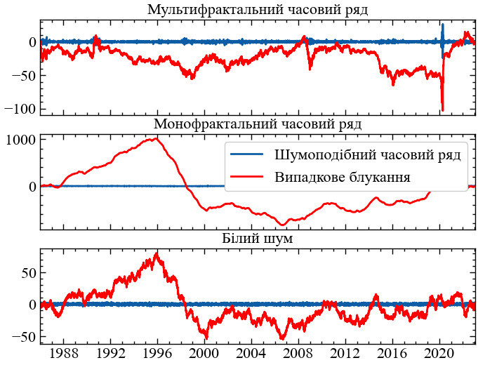
7.1.4.2 Обчислення середньоквадратичної варіації часового ряду
Традиційний аналіз варіації часових рядів полягає в обчисленні середнього значення варіації як середньоквадратичного відхилення. Читач може скористатися наведеним нижче кодом для обчислення середньоквадратичного відхилення для часових рядів з білим шумом, монофрактальних і мультифрактальних даних:
RMS_ordinary = np.sqrt(np.mean(white_noise**2)) # середньоквадратична варіація білого шуму
RMS_monofractal = np.sqrt(np.mean(pink_noise**2)) # середньоквадратична варіація монофрактала
RMS_multifractal = np.sqrt(np.mean(wti_ret**2)) # середньоквадратична варіація мультифракталаfig, ax = plt.subplots(3, 1, sharex=True)
ax[0].plot(time_ser.index[1:], wti_ret, label='Шумоподібний часовий ряд')
ax[0].axhline(y=np.mean(wti_ret), c='r', linestyle='--', label='Середнє')
ax[0].axhline(y=np.mean(wti_ret)+RMS_multifractal, c='r', linestyle='-', label='+/- 1 RMS')
ax[0].axhline(y=np.mean(wti_ret)-RMS_multifractal, c='r', linestyle='-')
ax[0].set_ylim(-20, 20)
ax[0].grid(False)
ax[0].margins(x=0)
ax[0].set_title('Мультифрактальний часовий ряд', fontsize=16)
ax[1].plot(time_ser.index[1:], pink_noise)
ax[1].axhline(y=np.mean(pink_noise), c='r', linestyle='--')
ax[1].axhline(y=np.mean(pink_noise)+RMS_monofractal, c='r', linestyle='-')
ax[1].axhline(y=np.mean(pink_noise)-RMS_monofractal, c='r', linestyle='-')
ax[1].grid(False)
ax[1].margins(x=0)
ax[1].set_title('Монофрактальний часовий ряд', fontsize=16)
ax[2].plot(time_ser.index[1:], white_noise)
ax[2].axhline(y=np.mean(white_noise), c='r', linestyle='--')
ax[2].axhline(y=np.mean(white_noise)+RMS_ordinary, c='r', linestyle='-')
ax[2].axhline(y=np.mean(white_noise)-RMS_ordinary, c='r', linestyle='-')
ax[2].grid(False)
ax[2].margins(x=0)
ax[2].set_title('Білий шум', fontsize=16)
handles, labels = ax[0].get_legend_handles_labels()
fig.legend(handles, labels, loc='lower center')
plt.show();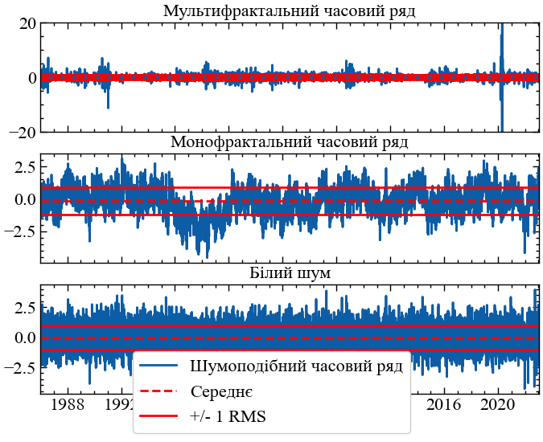
RMS (червона суцільна лінія)Рис. 7.8 ілюструє, що середня амплітуда варіації (тобто середньоквадратичне відхилення) є однаковою для всіх трьох часових рядів, навіть якщо вони мають досить різну структуру. MFDFA може розрізняти ці структури.
7.1.4.3 Локальна середньоквадратична варіація часового ряду
Мультифрактальні часові ряди на верхній панелі мають локальні флуктуації різної величини. Середньоквадратичне відхилення (RMS) у попередньому коді можна обчислити для сегментів часового ряду, щоб розрізнити величини локальних флуктуацій. Проста процедура полягає в тому, щоб розділити часовий ряд на однакові за розміром сегменти, що не перекриваються, і обчислити локальне середнє квадратичне відхилення для кожного сегмента. Це можна зробити за допомогою коду наведеного нижче:
def calc_rms(arr, scale=1335, m=1):
# симулюємо випадкове блукання (X)
X = np.cumsum(arr - np.mean(arr))
# транспонуємо значення X
X = X.T
# визначаємо довжини сегментів
scale = scale
# визначаємо порядок полінома
m = m
# визначаємо кількість сегментів
segments = np.floor(len(X) / scale).astype(int)
Index = {} # словник індексів значень
fit = {} # словник для збереження отриманих поліноміальних кривих
# для кожного сегмента
RMS = [] # список середньоквадратичних відхилень
for v in range(segments+1): # проходимо по кожному сегменту
Idx_start = v * scale # визначаємо початкове значення сегмента
Idx_stop = (v + 1) * scale # визначаємо кінцеве значення
# формуємо масив індексів значень досліджуваного сегмента
Index[v] = np.arange(Idx_start, min(Idx_stop, len(X)))
# вилучаємо значення по індексам
X_Idx = X[Index[v]]
# визначаємо поліноміальні коефіцієнти порядку m
C = np.polyfit(Index[v], X_Idx, m)
# будуємо поліноміальну криву по визначеним коефіцієнтам
fit[v] = np.polyval(C, Index[v])
# визначаємо варіацію ряду навколо поліноміального тренда
RMS.append(np.sqrt(np.mean((X_Idx - fit[v]) ** 2)))
return fit, RMS, Index, XПерший рядок коду функції calc_rms() перетворює зашумлений часовий ряд, мультифрактал, на часовий ряд випадкового блукання \(X\). Третій рядок коду задає масштаб параметра, який визначає розмір вибірки сегментів, що не перетинаються, для яких обчислюється локальне середнє квадратичне відхилення, RMS. П’ятий рядок — це кількість сегментів, на які можна розбити часовий ряд \(X\), де len(X) — розмір вибірки часового ряду \(X\). Таким чином, segments = 6 при len(X) = 9335 і scale = 1335. З дев’ятого по шістнадцятий рядки — це цикл, що обчислює локальне середньоквадратичне значення навколо тренду fit[v] для кожного сегмента, оновлюючи часовий індекс. У першому циклі v = 0, Index[0] переходить від 0 до 1335 значення сегмента (не включно). У другому циклі \(v = 1\), Index[1] переходить від 1335 до 2670 значення другого сегмента. В останньому циклі \(v = 6\), Index[6] переходить від 8010-го до 9345-го значення (не включно).
7.1.4.4 Локальне детрендування часового ряду
У складних системах наявні повільні мінливі тренди, тому для кількісної оцінки масштабо-інваріантності флуктуацій навколо цих трендів необхідно провести детрендування сигналу. У попередньому коді до \(X\) на кожному сегменті \(v\) підбирається поліноміальний тренд fit[v]. Параметр \(m\) визначає порядок полінома. Поліноміальний тренд є лінійним, якщо \(m = 1\), квадратичним, якщо \(m = 2\), і кубічним, якщо \(m = 3\). Рядок C = np.polyfit(Index[v], X[Index[v]], m) визначає коефіцієнти полінома C, які використовуються для створення поліноміальної залежності тренду fit[v] для кожного сегмента. Потім для залишкової варіації, X(Index[v])-fit[v], обчислюється локальне середньоквадратичне відхилення, RMS[v], в межах кожного сегмента \(v\). Локальна середньоквадратична варіація, RMS[v], представлена на Рис. 7.9 як відстань між червоними пунктирними трендами і червоними суцільними лініями.
fit_1, RMS_1, Index_1, X = calc_rms(wti_ret, scale=1335, m=1) # оцінка локального відхилення для мультифрактала
fit_2, RMS_2, Index_2, X = calc_rms(wti_ret, scale=1335, m=2) # оцінка локального відхилення для монофрактала
fit_3, RMS_3, Index_3, X = calc_rms(wti_ret, scale=1335, m=3) # оцінка локального відхилення для білого шумуfig, ax = plt.subplots(3, 1, sharex=True)
ax[0].plot(time_ser.index[1:], X)
for v in list(fit_1.keys()):
ax[0].plot(time_ser.index[Index_1[v]], fit_1[v], 'r--')
ax[0].plot(time_ser.index[Index_1[v]], fit_1[v]+RMS_1[v], c='r', linestyle='-')
ax[0].plot(time_ser.index[Index_1[v]], fit_1[v]-RMS_1[v], c='r', linestyle='-')
ax[0].grid(False)
ax[0].margins(x=0)
ax[0].set_title('Лінійне детрендування ' + r'$(m=1)$', fontsize=16)
ax[1].plot(time_ser.index[1:], X, label='Випадкове блукання мультифрактального сигналу')
for v in list(fit_2.keys()):
if v == 1:
ax[1].plot(time_ser.index[Index_2[v]], fit_2[v], 'r--', label='Локальний тренд')
ax[1].plot(time_ser.index[Index_2[v]], fit_2[v]+RMS_2[v], c='r', linestyle='-', label='+/- 1 RMS')
ax[1].plot(time_ser.index[Index_2[v]], fit_2[v]-RMS_2[v], c='r', linestyle='-')
else:
ax[1].plot(time_ser.index[Index_2[v]], fit_2[v], 'r--')
ax[1].plot(time_ser.index[Index_2[v]], fit_2[v]+RMS_2[v], c='r', linestyle='-')
ax[1].plot(time_ser.index[Index_2[v]], fit_2[v]-RMS_2[v], c='r', linestyle='-')
ax[1].grid(False)
ax[1].margins(x=0)
ax[1].set_title('Квадратичне детрендування ' + r'$(m=2)$', fontsize=16)
ax[2].plot(time_ser.index[1:], X)
for v in list(fit_3.keys()):
ax[2].plot(time_ser.index[Index_3[v]], fit_3[v], 'r--')
ax[2].plot(time_ser.index[Index_3[v]], fit_3[v]+RMS_3[v], c='r', linestyle='-')
ax[2].plot(time_ser.index[Index_3[v]], fit_3[v]-RMS_3[v], c='r', linestyle='-')
ax[2].grid(False)
ax[2].margins(x=0)
ax[2].set_title('Кубічне детрендування ' + r'$(m=3)$', fontsize=16)
handles, labels = ax[1].get_legend_handles_labels()
fig.legend(handles, labels, loc='lower center')
plt.show();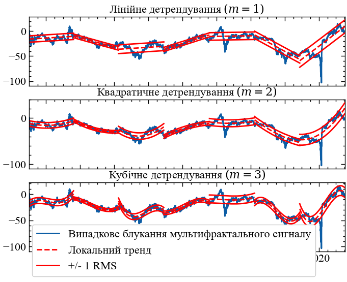
RMS навколо лінійного, квадратичного та кубічного трендів за допомогою функції calc_rms() (\(m = 1\), \(m = 2\) та \(m = 3\), відповідно). Червона пунктирна лінія — це підігнаний тренд, fit[v], у семи сегментах вибірки розміром 1335. Відстань між червоним штриховим трендом і суцільними червоними лініями становить \(\pm\) RMS7.1.4.5 Монофрактальний аналіз детрендованих флуктуацій
У DFA варіації локального середньоквадратичного відхилення кількісно оцінюються загальним середньоквадратичним відхиленням (\(F\)).
Швидкі коливання часового ряду \(X\) впливатимуть на загальне середньоквадратичне відхилення \(F\) у сегментах малої довжини (масштабу), тоді як повільні коливання впливатимуть на \(F\) у сегментах великої довжини (масштабу). Таким чином, функція флуктуацій \(F\) повинна бути обчислена для декількох масштабів, щоб виокремити вплив як швидкоплинних, так і повільних коливань, які у свою чергу визначають структурні перетворення часового ряду. Функція флуктуацій \(F(ns)\) може бути обчислена для декількох масштабів шляхом модифікації попереднього коду:
def calc_F(arr, scale, m=1):
X = np.cumsum(arr - np.mean(arr)) # симулюємо випадкове блукання (X)
X = X.T # транспонуємо значення X
scale = scale
m = m
segments = np.zeros(len(scale), dtype=int)
F = np.zeros(len(scale))
Index = {} # словник індексів значень
fit = {} # словник для збереження отриманих поліноміальних кривих
# для кожного сегмента
RMS = {} # словник середньоквадратичних відхилень
for ns in range(len(scale)):
segments[ns] = np.floor(len(X) / scale[ns]).astype(int)
RMS[ns] = np.zeros(segments[ns])
for v in range(segments[ns]): # проходимо по кожному сегменту
# визначаємо початкове значення сегмента
Idx_start = v * scale[ns]
# визначаємо кінцеве значення
Idx_stop = (v + 1) * scale[ns] if v < segments[ns] - 1 else len(X)
# формуємо масив індексів значень досліджуваного сегмента
Index[v, ns] = np.arange(Idx_start, Idx_stop)
# вилучаємо значення по індексам
X_Idx = X[Index[v, ns]]
# визначаємо поліноміальні коефіцієнти порядку m
C = np.polyfit(Index[v, ns], X_Idx, m)
# будуємо поліноміальну криву по визначеним коефіцієнтам
fit[v, ns] = np.polyval(C, Index[v, ns])
# оцінюємо середньоквадратичне відхилення для фрагмента v на масштабі ns
RMS[ns][v] = np.sqrt(np.mean((X_Idx - fit[v, ns]) ** 2))
# оцінюємо загальне середньоквадратичне відхилення в межах масштабу ns
F[ns] = np.sqrt(np.mean(RMS[ns] ** 2))
return F, RMS, Index, Xscales = [16, 32, 64, 128, 256, 512, 1024][::-1]
F, RMS, Index, X = calc_F(wti_ret, scale=scales) # оцінка узагальненої функції флуктуацій по різним масштабамfig, ax = plt.subplots(len(scales), sharex=True)
for scale, val in enumerate(scales):
l = [Index[val] for val in Index.keys() if (val[1] == scale)]
x = np.array([])
for v in l:
x = np.concatenate([x, v])
y = np.array([])
for idx, v in enumerate(l):
y = np.concatenate([y, RMS[scale][idx]*np.ones(len(v))])
if scales[scale] == 16:
ax[scale].plot(time_ser.index[1:], y, c='b', label="Локальні флуктуацій: RMS")
ax[scale].axhline(y=F[scale], c='r', linestyle='-', label=r"RMS локальних флуктуацій: $F$")
ax[scale].grid(False)
ax[scale].set_title(f"Масштаб = {scales[scale]}", fontsize=16)
ax[scale].margins(x=0)
else:
ax[scale].plot(time_ser.index[1:], y, c='b')
ax[scale].axhline(y=F[scale], c='r', linestyle='-')
ax[scale].grid(False)
ax[scale].set_title(f"Масштаб = {scales[scale]}", fontsize=16)
ax[scale].margins(x=0)
handles, labels = ax[-1].get_legend_handles_labels()
fig.legend(handles, labels, loc='upper left', fontsize=12)
fig.tight_layout(pad=0.05)
plt.show();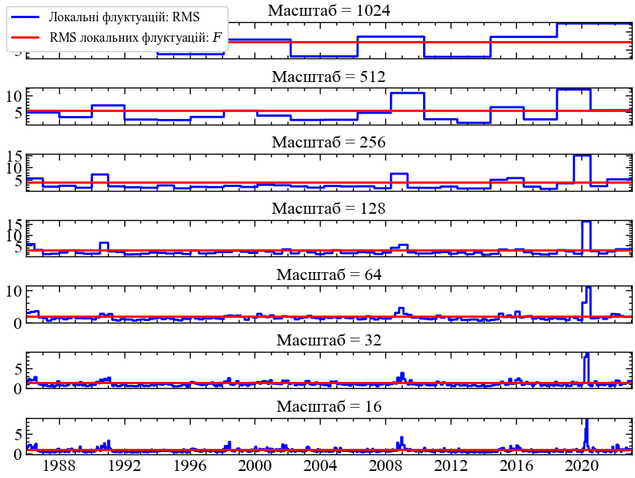
RMS[ns] обчислені для сегментів із різними масштабами. Функція флуктуацій F[ns] є загальним середньоквадратичним відхиленням локальних коливань RMS[ns]. Зверніть увагу, що F[ns] зменшується зі зменшенням масштабуDFA визначає монофрактальну структуру часового ряду відповідно до степеневої залежність між загальним середнім квадратичним відхиленням (тобто \(F\)), обчисленим для декількох масштабів. Степенева залежність між загальним середнім квадратичним відхиленням позначається нахилом (\(H\)) лінії регресії, розрахованим за допомогою наступного коду:
C = np.polyfit(np.log(scales), np.log(F), 1)
H = C[0]
RegLine = np.polyval(C, np.log(scales))Модифікуємо попередній код, додавши нові фрагменти:
def calc_H(arr, scale, m=1):
X = np.cumsum(arr - np.mean(arr)) # симулюємо випадкове блукання (X)
X = X.T # транспонуємо значення X
scale = scale
m = m
segments = np.zeros(len(scale), dtype=int)
F = np.zeros(len(scale))
Index = {} # словник індексів значень
fit = {} # словник для збереження отриманих поліноміальних кривих
# для кожного сегмента
RMS = {} # словник середньоквадратичних відхилень
for ns in range(len(scale)):
segments[ns] = np.floor(len(X) / scale[ns]).astype(int)
RMS[ns] = np.zeros(segments[ns])
for v in range(segments[ns]): # проходимо по кожному сегменту
# визначаємо початкове значення сегмента
Idx_start = v * scale[ns]
# визначаємо кінцеве значення
Idx_stop = (v + 1) * scale[ns] if v < segments[ns] - 1 else len(X)
# формуємо масив індексів значень досліджуваного сегмента
Index[v, ns] = np.arange(Idx_start, Idx_stop)
# вилучаємо значення по індексам
X_Idx = X[Index[v, ns]]
# визначаємо поліноміальні коефіцієнти порядку m
C = np.polyfit(Index[v, ns], X_Idx, m)
# будуємо поліноміальну криву по визначеним коефіцієнтам
fit[v, ns] = np.polyval(C, Index[v, ns])
# оцінюємо середньоквадратичне відхилення для фрагмента v на масштабі ns
RMS[ns][v] = np.sqrt(np.mean((X_Idx - fit[v, ns]) ** 2))
# оцінюємо загальне середньоквадратичне відхилення в межах масштабу ns
F[ns] = np.sqrt(np.mean(RMS[ns] ** 2))
# знаходимо коефіцієнти рівняння прямої
C = np.polyfit(np.log(scale), np.log(F), 1)
# беремо кут нахилу прямої в якості показника Херста
H = C[0]
# будуємо саме рівняння
RegLine = np.polyval(C, np.log(scale))
return H, RegLine, FТепер розглянемо залежність загальної функції флуктуацій \(F\) від різних довжин (масштабів) локальних сегментів ряду для досліджуваних нами рядів:
scmin = 16
scmax = 1024
scres = 19
exponents = np.linspace(np.log(scmin), np.log(scmax), scres)
scales_exp = np.round(np.exp(1)**exponents).astype(int)
H_multifrac, RegLine_multifrac, F_multifrac = calc_H(wti_ret, scale=scales_exp, m=1)
H_monofrac, RegLine_monofrac, F_monofrac = calc_H(pink_noise, scale=scales_exp, m=1)
H_white_noise, RegLine_white_noise, F_white_noise = calc_H(white_noise, scale=scales_exp, m=1)fig, ax = plt.subplots(1, 1)
ax.set_xscale('log')
ax.set_yscale('log')
ax.scatter(scales_exp, F_multifrac,
label=fr"Мультифрактальний ряд ($H$={H_multifrac:.2f})",
color='darkblue')
plt.plot(scales_exp, np.exp(RegLine_multifrac), color='darkblue')
ax.scatter(scales_exp, F_monofrac,
label=fr"Монофрактальний ряд ($H$={H_monofrac:.2f})",
color='magenta')
plt.plot(scales_exp, np.exp(RegLine_monofrac), color='magenta')
ax.scatter(scales_exp, F_white_noise,
label=fr"Білий шум ($H$={H_white_noise:.2f})",
color='red')
plt.plot(scales_exp, np.exp(RegLine_white_noise), color='red')
ax.set_xlabel(r'$\log{ns}$')
ax.set_ylabel(r"$\log{F(ns)}$")
plt.legend(fontsize=16)
fig.tight_layout()
plt.show();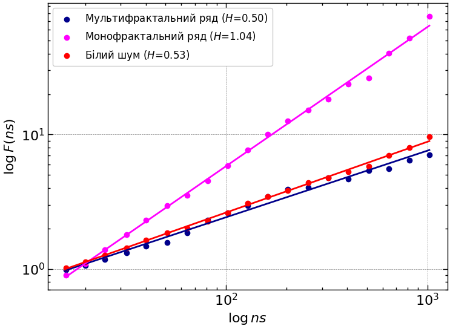
Показник Херста визначає монофрактальну структуру часового ряду, вказуючи, наскільки швидко зростає загальне середньоквадратичне відхилення \(F\) локальних коливань RMS зі збільшенням розміру локальних сегментів ряду (тобто, масштабу). Рис. 7.11 показує, що загальне середньоквадратичне значення локальних флуктуацій \(F\) у порівнянні з індексом нафти та білим шумом зростає швидше зі збільшенням розміру вибірки сегментів для монофрактального рожевого шуму. Рис. 7.12 ілюструє, що показник Херста визначає континуум між часовими рядами, подібними до шуму, і часовими рядами, подібними до випадкового блукання. Показник Херста знаходиться в інтервалі від 0 до 1 для зашумлений часових рядів, тоді як для часових рядів, подібних до випадкових блукань, він перевищує 1. Часовий ряд має довгострокову залежну (тобто корельовану) структуру, коли показник Херста знаходиться в інтервалі 0.5-1, і антикорельовану структуру, коли показник Херста знаходиться в інтервалі 0-0.5. Часовий ряд має незалежну або короткострокову залежну структуру в окремому випадку, коли показник Херста дорівнює 0.5. Згідно з попереднім рисунком, часові ряди білого шуму та нафти представляються непередбачуваними, оскільки показник Херста близький до 0.5, тоді як рожевий шум довгостроково залежну структуру з показником Херста близьким до 1.
betas = np.linspace(0.0, 2.0, 12)[::-1]
scmin = 16
scmax = 1024
scres = 19
exponents = np.linspace(np.log(scmin), np.log(scmax), scres)
scales_exp = np.round(np.exp(1)**exponents).astype(int)color = iter(plt.cm.rainbow(np.linspace(0, 1, len(betas))))
fig, ax = plt.subplots(len(betas), 1, sharex=True)
for idx, beta in enumerate(betas):
noise = nk.signal_noise(duration=wti_length, # генеруємо шум із різними значеннями beta
sampling_rate=1,
beta=beta,
random_state=123)
H_noise, _, _ = calc_H(arr=noise, scale=scales_exp, m=1)
c = next(color)
ax[idx].plot(np.arange(len(noise)), noise, label=fr"$H$ = {H_noise:.2f}", c=c)
ax[idx].grid(False)
ax[idx].legend(loc="upper right", fontsize=12)
ax[idx].margins(x=0)
fig.subplots_adjust(hspace=0)
plt.show();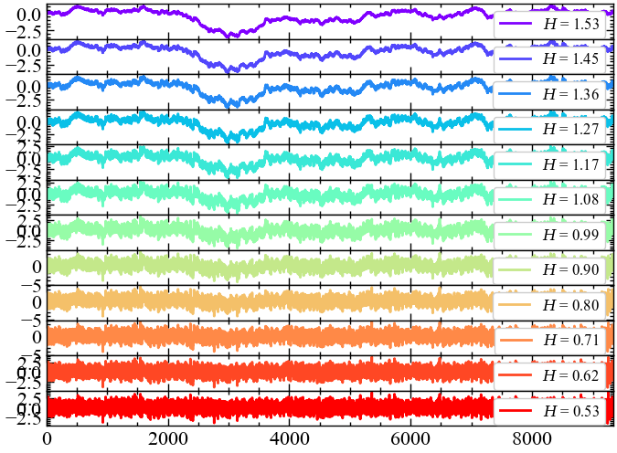
7.1.4.6 Мультифрактальний аналіз детрендованих флуктуацій
Структури монофрактального та мультифрактального часових рядів відрізняється, хоча вони мають схожі загальні середньоквадратичні значення. Мультифрактальні часові ряди містять локальні флуктуації як з екстремально малими, так і з екстремально великими значеннями, що не характерно для монофрактальних часових рядів. Відсутність флуктуацій з екстремально великими та малими значеннями призводить до нормального розподілу для монофрактального часового ряду, де варіація описується лише статистичним моментом другого порядку (дисперсією). Отже, монофрактальний DFA базується на статистиці другого порядку загального середньоквадратичного відхилення (тобто, \(F\,\)). У мультифрактальному часовому ряді локальні коливання, RMS[ns][v], будуть екстремально великими для сегментів \(v\) в межах часових періодів великих коливань і екстремально малими для сегментів \(v\) в межах часових періодів малих коливань. Отже, мультифрактальні часові ряди не є нормально розподіленими і слід враховувати всі статистичні моменти \(q\)-го порядку. Таким чином, необхідно розширити загальне середньоквадратичне значення монофрактального DFA до середньоквадратичної функції флуктуацій \(q\)-го порядку мультифрактального DFA \((F_{q})\):
def calc_Fq(arr, scale, q, m=1):
X = np.cumsum(arr - np.mean(arr)) # симулюємо випадкове блукання (X)
X = X.T # транспонуємо значення X
scale = scale
qs = q
m = m
segments = np.zeros(len(scale), dtype=int)
Fq = np.zeros((len(qs), len(scale)))
Index = {}
RMS = {} # словник локальних середньоквадратичних відхилень
fit = {} # словник для збереження отриманих поліноміальних кривих
# для кожного сегмента
qRMS = {} # словник локальних відхилень зважених показником q
for ns in range(len(scale)):
segments[ns] = np.floor(len(X) / scale[ns]).astype(int)
RMS[ns] = np.zeros(segments[ns])
# проходимо по кожному сегменту
for v in range(segments[ns]):
# визначаємо початкове значення сегмента
Idx_start = v * scale[ns]
# визначаємо кінцеве значення
Idx_stop = (v + 1) * scale[ns] if v < segments[ns] - 1 else len(X)
# формуємо масив індексів значень досліджуваного сегмента
Index[v] = np.arange(Idx_start, Idx_stop)
# вилучаємо значення по індексам
X_Idx = X[Index[v]]
# визначаємо поліноміальні коефіцієнти порядку m
C = np.polyfit(Index[v], X_Idx, m)
# будуємо поліноміальну криву по визначеним коефіцієнтам
fit = np.polyval(C, Index[v])
# оцінюємо середньоквадратичне відхилення для фрагмента v на масштабі ns
RMS[ns][v] = np.sqrt(np.mean((X_Idx - fit) ** 2))
# приводимо q значення до типу float
qs = np.asarray_chkfinite(qs, dtype=float)
# для мультифрактальності
# ----------------------------
for nq, qval in enumerate(qs):
if (qval != 0.):
qRMS[nq, ns] = RMS[ns] ** q[nq]
Fq[nq, ns] = np.mean(qRMS[nq, ns]) ** (1 / q[nq])
else:
Fq[nq, ns] = np.exp(0.5 * np.mean(np.log(RMS[ns] ** 2)))
# ----------------------------
return Fq, qRMS, IndexУ новому блоці коду запускається цикл, який обчислює загальне середньоквадратичне значення \(q\)-порядку \(F_{q}(nq)\) від від’ємних до додатних \(q\). Порядок \(q\) зважує вплив сегментів ряду з великими та малими коливаннями, RMS, як показано на наступному рисунку. На величину \(F_{q}(nq)\) для від’ємних \(q\) впливають сегменти \(v\) з малими RMS(v). Навпаки, на \(F_{q}(nq)\) для додатних \(q\) впливають відрізки \(v\) з великими RMS(v). Локальні флуктуації RMS з великими та малими величинами класифікуються за величиною від’ємного або додатного порядку \(q\) відповідно. На \(F_{q}\) для \(q = -3\) і \(3\) більше впливають відрізки \(v\) з найменшим і найбільшим RMS(v), відповідно, порівняно з \(F_{q}\) для \(q = -1\) і \(1\). Середня точка \(q = 0\) є нейтральною щодо впливу відрізків з малим та великим RMS. Зверніть увагу, що в останньому рядку коду нового блоку перевизначено окремий випадок \(q(nq) = 0\), оскільки \(1/0\) прямує до нескінченності (тобто, \(1/q(q = 0) = \infty\)). Читач також повинен помітити, що \(F_{q}[q == 2]\) дорівнює статистиці другого порядку \(F\), оскільки \(\sqrt{x} = x^{1/2}\). Монофрактальний DFA тепер розширюється до MFDFA.
scales = np.array([32])
nq = np.array([-3, -1, 1, 3])
Fq, qRMS, Index = calc_Fq(wti_ret, scale=scales, q=nq, m=1)
Fq_pink, qRMS_pink, Index = calc_Fq(pink_noise, scale=scales, q=nq, m=1)fig, ax = plt.subplots((len(nq)+1), 1, sharex=True)
ax[0].plot(time_ser.index[1:], wti_ret, label="Мультифрактал")
ax[0].plot(time_ser.index[1:], pink_noise, label="Монофрактал")
ax[0].grid(False)
ax[0].margins(x=0)
ax[0].legend(loc='upper left', fontsize=12)
ax[0].get_xaxis().set_visible(False)
for idx in range(1, len(nq)+1):
l = [Index[val] for val in Index.keys()]
x = np.array([])
for v in l:
x = np.concatenate([x, v])
y = np.array([])
y_pink = np.array([])
for i, v in enumerate(l):
y = np.concatenate([y, qRMS[(idx-1, 0)][i]*np.ones(len(v))])
y_pink = np.concatenate([y_pink, qRMS_pink[(idx-1, 0)][i]*np.ones(len(v))])
ax[idx].set_title(fr"Локальні варіації для {scales[0]}-го масштабу при $q=${nq[idx-1]}", fontsize=14)
ax[idx].plot(time_ser.index[1:], y)
ax[idx].plot(time_ser.index[1:], y_pink)
ax[idx].grid(False)
ax[idx].margins(x=0)
handles, labels = ax[0].get_legend_handles_labels()
fig.tight_layout(pad=0.01)
plt.show();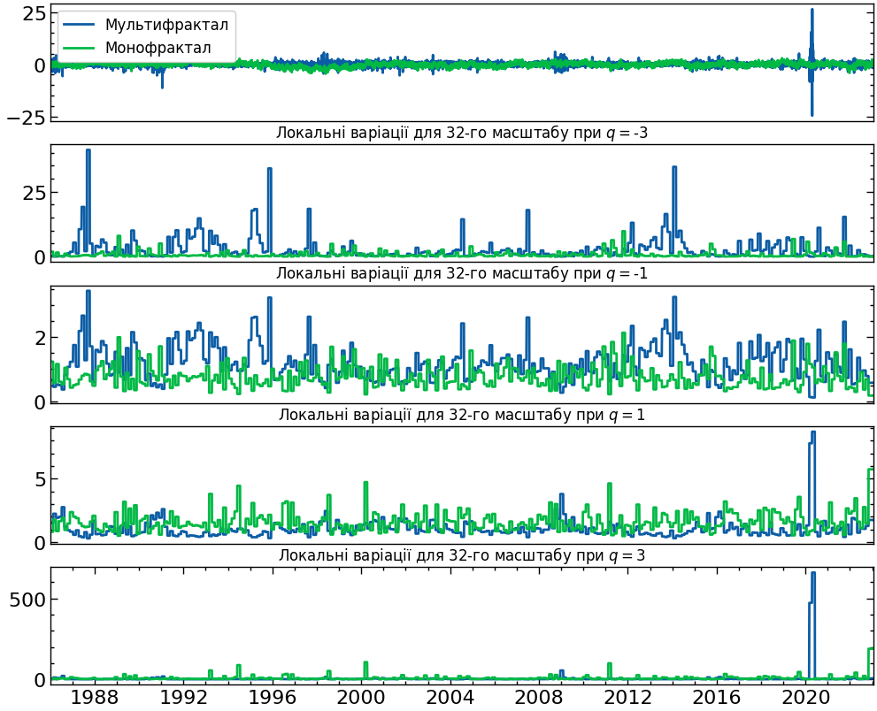
qRMS від \(q\) при масштабі 32qRMS на Рис. 7.13 — це \(q\)-порядок локальних флуктуацій (тобто, RMS) і є складовою частиною загального\(q\)-порядку RMS (тобто, \(F_{q}\)). qRMS представлено для монофрактального (зелена смуга) та мультифрактальних (синя смуга) часових рядів. Від’ємний порядок \(q\) (\(q = -3\) і \(-1\)) підсилює сегменти в мультифрактальному часовому ряді з екстремально малими RMS, тоді як додатний порядок \(q\) (\(q = 3\) і \(1\)) підсилює відрізки з екстремально великими RMS. Зверніть увагу, що \(q = -3\) і \(q = 3\) підсилюють малу і велику варіацію відповідно більше, ніж \(q = -1\) і \(q = 1\). Зауважте також, що монофрактальний часовий ряд не має відрізків з екстремально великими або малими коливаннями і, таким чином, не має піків у qRMS. Загальне середньоквадратичне відхилення \(q\)-го порядку здатне розрізняти структуру малих і великих флуктуацій і, відповідно, монофрактальних і мультифрактальних часових рядів.
Тепер можна визначити показники Херста \(q\)-го порядку як нахили \(h(q)\) ліній регресії для кожного середньоквадратичного значення \(F_{q}\) \(q\)-го порядку. І \(h(q)\), і лінія регресії визначаються в циклі для кожного \(q\)-го порядку:
def calc_Hq(arr, scale, q, m=1):
X = np.cumsum(arr - np.mean(arr)) # симулюємо випадкове блукання (X)
X = X.T # транспонуємо значення X
scale = scale
qs = q
m = m
segments = np.zeros(len(scale), dtype=int)
Fq = np.zeros((len(qs), len(scale))) # масив для збереження загальної функції флуктуацій
hq = np.zeros(len(qs), dtype=float) # масив для збереження Херста q-го порядку
qRegLine = {} # словник для збереження ліній регресій
Index = {} # словник для збереження індексів сегментів ряду
RMS = {} # словник локальних середньоквадратичних відхилень
fit = {} # словник для збереження отриманих поліноміальних кривих
# для кожного сегмента
qRMS = {} # словник локальних відхилень зважених показником q
for ns in range(len(scale)):
segments[ns] = np.floor(len(X) / scale[ns]).astype(int)
RMS[ns] = np.zeros(segments[ns])
# проходимо по кожному сегменту
for v in range(segments[ns]):
# визначаємо початкове значення сегмента
Idx_start = v * scale[ns]
# визначаємо кінцеве значення
Idx_stop = (v + 1) * scale[ns] if v < segments[ns] - 1 else len(X)
# формуємо масив індексів значень досліджуваного сегмента
Index[v] = np.arange(Idx_start, Idx_stop)
# вилучаємо значення по індексам
X_Idx = X[Index[v]]
# визначаємо поліноміальні коефіцієнти порядку m
C = np.polyfit(Index[v], X_Idx, m)
# будуємо поліноміальну криву по визначеним коефіцієнтам
fit = np.polyval(C, Index[v])
# оцінюємо середньоквадратичне відхилення для фрагмента v на масштабі ns
RMS[ns][v] = np.sqrt(np.mean((X_Idx - fit) ** 2))
# приводимо q значення до типу float
qs = np.asarray_chkfinite(qs, dtype=float)
# для мультифрактальності
# ----------------------------
for nq, qval in enumerate(qs):
if (qval != 0.):
qRMS[nq, ns] = RMS[ns] ** q[nq]
Fq[nq, ns] = np.mean(qRMS[nq, ns]) ** (1 / q[nq])
else:
Fq[nq, ns] = np.exp(0.5 * np.mean(np.log(RMS[ns] ** 2)))
for nq, _ in enumerate(qs):
# якщо флуктуації дорів. 0, log2 стикнеться з діленням на 0
old_setting = np.seterr(divide="ignore", invalid="ignore")
C = np.polyfit(np.log(scale), np.log(Fq[nq, :]), m)
np.seterr(**old_setting)
hq[nq] = C[0]
qRegLine[nq] = np.polyval(C, np.log(scale))
# ----------------------------
return hq, qRegLine, Fq scmin = 16
scmax = 1024
scres = 19
q_min = -5.0
q_max = 5.0
q_step = 0.1
nq = np.arange(q_min, q_max+q_step, q_step)
exponents = np.linspace(np.log(scmin), np.log(scmax), scres)
scales_exp = np.round(np.exp(1)**exponents).astype(int)
Hq_multifrac, qRegLine_multifrac, Fq_multifrac = calc_Hq(wti_ret, scale=scales_exp, q=nq, m=1)
Hq_monofrac, qRegLine_monofrac, Fq_monofrac = calc_Hq(pink_noise, scale=scales_exp, q=nq, m=1)
Hq_white_noise, qRegLine_white_noise, Fq_white_noise = calc_Hq(white_noise, scale=scales_exp, q=nq, m=1)fig, ax = plt.subplots(2, 2)
ax[0][0].set_title("Мультифрактал")
ax[0][0].set_xlabel(r"$ns$")
ax[0][0].set_ylabel(r"$F_{q}(ns)$")
ax[0][0].set_xscale('log')
ax[0][0].set_yscale('log')
for i in range(len(nq)):
ax[0][0].scatter(scales_exp, Fq_multifrac[i, :], color='darkblue')
ax[0][0].plot(scales_exp, np.exp(qRegLine_multifrac[i]), color='darkblue')
ax[0][1].set_title("Монофрактал")
ax[0][1].set_xlabel(r"$ns$")
ax[0][1].set_xscale('log')
ax[0][1].set_yscale('log')
for i in range(len(nq)):
ax[0][1].scatter(scales_exp, Fq_monofrac[i, :], color='magenta')
ax[0][1].plot(scales_exp, np.exp(qRegLine_monofrac[i]), color='magenta')
ax[1][0].set_title("Білий шум")
ax[1][0].set_xlabel(r"$ns$")
ax[1][0].set_ylabel(r"$F_{q}(ns)$")
ax[1][0].set_xscale('log')
ax[1][0].set_yscale('log')
for i in range(len(nq)):
ax[1][0].scatter(scales_exp, Fq_white_noise[i, :], color='red')
ax[1][0].plot(scales_exp, np.exp(qRegLine_white_noise[i]), color='red')
ax[1][1].set_title(r"Показники Херста $q$-го порядку")
ax[1][1].set_xlabel(r"$q$")
ax[1][1].set_ylabel(r"$h(q)$")
ax[1][1].plot(nq, Hq_multifrac, linestyle='-', marker='o', label="Мультифрактал", color='darkblue')
ax[1][1].plot(nq, Hq_monofrac,linestyle='-', marker='o', label="Монофрактал", color='magenta')
ax[1][1].plot(nq, Hq_white_noise, linestyle='-', marker='o', label="Білий шум", color='red')
ax[1][1].legend(loc='center right', fontsize=12)
fig.tight_layout(pad=0.1)
plt.show();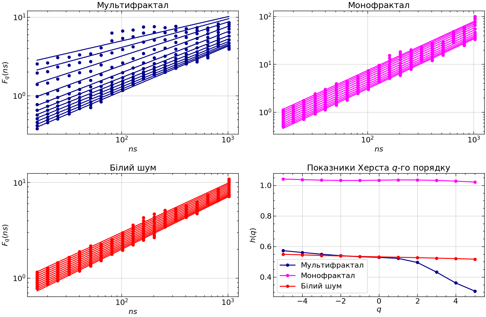
Можемо бачити, що узагальнена функція флуктуацій для мультифракталу залежить не лише від масштабу, але й від \(q\), що демонструють різні нахили ліній регресії \(h(q)\). Масштабуючі узагальнені функції флуктуацій \(F_{q}\) для монофракталу та білого шуму є \(q\)-незалежними, оскільки їх лінії регресії для різних масштабів мають один і той самий кут нахилу. Показник Херста \(q\)-го порядку \(h(q)\) для мультифрактального ряду (синя лінія) представляється незалежним для \(q<0\) і змінним для \(q>0\). Це вказує на те, що джерелом мультифрактальності нафти є аномально великі флуктуацій як, наприклад, криза коронавірусної пандемії. Для монофракталу (рожева лінія) та білого шуму (червона лінія) \(h(q)\) залишаються сталими.
7.1.4.7 Мультифрактальний спектр часових рядів
Показник Херста \(q\)-го порядку \(h(q)\) є лише одним з декількох типів масштабних показників, що використовуються для параметризації мультифрактальної структури часових рядів. Як уже було представлено попередньо, ми можемо вивести показник маси \(q\)-го порядку (\(\tau(q)\)), а потім через \(\tau(q)\) отримати показник сингулярності \(q\)-го порядку (\(\alpha(q)\)) і фрактальну розмірність (\(f(\alpha)\)) флуктуацій (областей) із ступенем сингулярності \(\alpha(q)\). Графік залежності \(\alpha(q)\) від \(f(\alpha)\) представляє мультифрактальний спектр. Показники маси, сингулярності та фрактальності можна обчислити згідно коду, що наведений нижче:
tau_multifrac = nq * Hq_multifrac - 1
tau_monofrac = nq * Hq_monofrac - 1
tau_white_noise = nq * Hq_white_noise - 1
alpha_multifrac = np.gradient(tau_multifrac, nq)
alpha_monofrac = np.gradient(tau_monofrac, nq)
alpha_white_noise = np.gradient(tau_white_noise, nq)
f_multifrac = nq * alpha_multifrac - tau_multifrac
f_monofrac = nq * alpha_monofrac - tau_monofrac
f_white_noise = nq * alpha_white_noise - tau_white_noisefig, ax = plt.subplots(1, 3)
ax[0].set_xlabel(r"$q$")
ax[0].set_ylabel(r"$\tau(q)$")
ax[0].plot(nq, tau_multifrac, linestyle='-', marker='o', label="Мультифрактал", color='darkblue')
ax[0].plot(nq, tau_monofrac, linestyle='-', marker='o', label="Монофрактал", color='magenta')
ax[0].plot(nq, tau_white_noise, linestyle='-', marker='o', label="Білий шум", color='red')
ax[0].legend()
ax[1].set_xlabel(r"$\alpha$")
ax[1].set_ylabel(r"$f(\alpha)$")
ax[1].plot(alpha_multifrac, f_multifrac, linestyle='-', marker='o', label="Мультифрактал", color='darkblue')
ax[1].plot(alpha_monofrac, f_monofrac, linestyle='-', marker='o', label="Монофрактал", color='magenta')
ax[1].plot(alpha_white_noise, f_white_noise, linestyle='-', marker='o', label="Білий шум", color='red')
ax[2].set_xlabel(r"$q$")
ax[2].set_ylabel(r"$f(\alpha)$")
ax[2].plot(nq, f_multifrac, linestyle='-', marker='o', label="Мультифрактал", color='darkblue')
ax[2].plot(nq, f_monofrac, linestyle='-', marker='o', label="Монофрактал", color='magenta')
ax[2].plot(nq, f_white_noise, linestyle='-', marker='o', label="Білий шум", color='red')
fig.tight_layout(pad=0.01)
plt.show();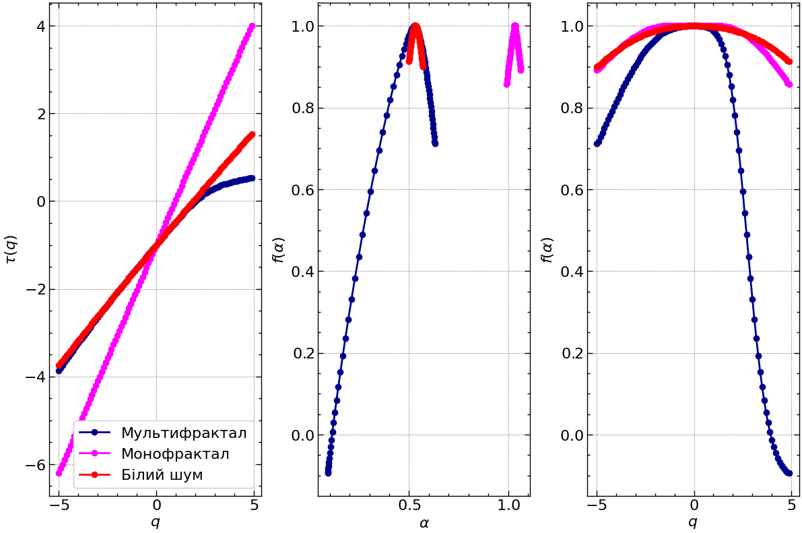
Показники сингулярності \(\alpha\) для великих висококонцентрованих флуктуацій малі й розташовані в лівому хвості спектра, тоді як \(\alpha\) для малих флуктуацій великі й розташовані в правому хвості спектра.
Таким чином, сила мультифрактальності описується великим відхиленням експоненти локальної сингулярності \(\alpha\) від центральної тенденції \(\alpha(0)\). Монофрактальний сигнал — це випадок, коли \(\alpha\) залишається майже константною, і в деяких випадках мультифрактальний спектр зводиться до однієї точки за даною \(\alpha\).
Діапазон \(\alpha\) вказує на різноманітність експонент сингулярності, що описують динаміку системи, а величина \(f(\alpha)\) вказує на величину внеску елементів із відповідним показником \(\alpha\).
Мультифрактальний спектр може характеризуватися різною шириною, що вказує на варіативність процесів, що відбуваються всередині системи. Так само він може бути як симетричним, так і асиметричним. Асиметрія буває як правосторонньою, так і лівосторонньою, що вказує на різний ступінь впливу висококонцентрованих і низькоконцентрованих елементів (флуктуацій). Мультифрактальний спектр матиме довгий лівий хвіст, коли часовий ряд має мультифрактальну структуру, чутливу до локальних флуктуацій з великими амплітудами.
Навпаки, мультифрактальний спектр матиме довгий правий хвіст, коли він чутливий до локальних флуктуацій з малими амплітудами.
Проілюструємо залежність ширини спектра мультифрактальності від рівня флуктуацій у ряді. Дану залежність будемо демонструвати на прикладі рядів, що розподілятимуться згідно альфа-стабільному розподілу Леві, який ми ще розглядатимемо в наступних роботах. Для генерації випадкових величин із даного розподілу, використовуватимемо модуль scipy.stats. З нього імпортуємо клас levy_stable для використання методу rvs(). Метод приймає показник \(\alpha\), що відповідає за частоту виникнення подій, що виходять за межі нормального розподілу. Розглянемо діапазон таких значень \(\alpha\) та спектри згенерованих рядів.
from scipy.stats import levy_stable
alphas = np.linspace(1.5, 2.0, 7)
scmin = 16
scmax = 1024
scres = 19
q_min = -5.0
q_max = 5.0
q_step = 0.1
nq_levy = np.arange(q_min, q_max+q_step, q_step)
exponents = np.linspace(np.log(scmin), np.log(scmax), scres)
scales_exp = np.round(np.exp(1)**exponents).astype(int)color = iter(plt.cm.plasma(np.linspace(0, 0.8, len(alphas))))
fig = plt.figure()
subfigs = fig.subfigures(1, 2)
ax1 = subfigs[0].subplots(len(alphas), 1, sharex=True)
ax2 = subfigs[1].subplots(1, 1)
for i in range(len(alphas)):
# генеруємо альфа-стабільний процес
r = levy_stable.rvs(alpha=alphas[i], beta=0, loc=0,
scale=1, size=len(wti_ret), random_state=123)
Hq_levy, qRegLine_levy, Fq_levy = calc_Hq(r, scale=scales_exp, q=nq_levy, m=1)
tau_levy = nq_levy * Hq_levy - 1
alpha_levy = np.gradient(tau_levy, nq_levy)
f_levy = nq_levy * alpha_levy - tau_levy
c = next(color)
ax1[i].plot(np.arange(len(r)), r, label=fr'$\alpha$={alphas[i]:.2f}', c=c)
ax1[i].margins(x=0)
ax1[i].legend(loc="upper left", fontsize=12)
ax2.plot(alpha_levy, f_levy, marker='o', c=c)
ax1[0].set_title("Мультифрактальні часові ряди", fontsize=16)
ax1[-1].set_xlabel("Час (порядковий номер)")
ax1[len(alphas) // 2].set_ylabel('Амплітуда коливань')
ax2.set_title("Мультифрактальні спектри", fontsize=16)
ax2.set_xlabel(r"$\alpha$")
ax2.set_ylabel(r"$f(\alpha)$")
fig.subplots_adjust(hspace=0.1)
plt.show();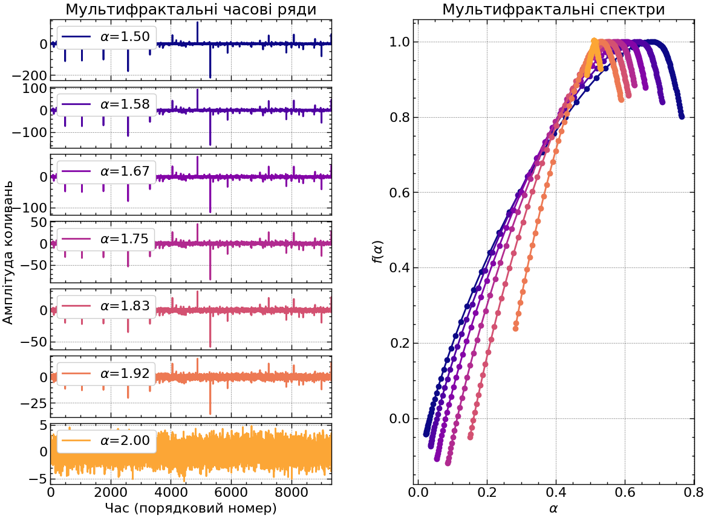
Система, складність якої зумовлена висококонцентрованими елементами, матиме чітко виражений лівосторонній спектр. Складність системи, що зумовлена слабко концентрованими елементами, характеризує правий хвіст мультифрактального спектра. Якщо складність системи розвивається за рахунок елементів двох типів, тоді спектр представлятиметься симетричним, де елементи двох типів будуть рівноймовірними. Для згенерованих вище Леві альфа-стабільних процесів видно, що чим нижче значення \(\alpha\), тим сильніша домінація висококонцентрованих (великих) флуктуацій. При \(\alpha=2.0\) спектр усе сильніше звужується до сингулярної точки.
Далі буде показано, що для отриманої мультифрактальної параболи мультифрактального спектра можуть бути розраховані показники як всієї ширини спектра \((\Delta\alpha)\), так і окремо його правого та лівого хвостів (\(R\) та \(L\)). Також можна розрахувати значення сингулярності, де \(f(\alpha)\) приймає максимальне значення \(\alpha_0\), і навіть так звану “асиметрію” цього спектра \((\Delta f)\). На Рис. 7.17 схематично представлено положення ключових індикаторів мультифрактальності спектра.

Також варто зазначити, що дана схема не представляє вичерпний список індикаторів мультифрактальності системи, що ми використовуватимемо в подальшому, але має надавати інтуїтивне розуміння того, як виводиться більшість мультифрактальних показників.
7.1.4.8 Узагальнені фрактальні розмірності
Наряду з мультифрактальним спектром корисно буде розглянути спектр узагальнених фрактальних розмірностей або по іншому, розмірностей Реньї, оскільки вони також мають інформаційно-теоретичне значення. З’ясуємо фізичний сенс узагальнених фрактальних розмірностей для деяких значень \(q\). При \(q=0\), \(Z(0, \varepsilon) = N(\varepsilon)\). З іншого боку, можна визначити, що \(Z(0, \varepsilon) \approx \varepsilon^{\tau(0)} = \varepsilon^{-D_{0}}\). Співставляючи зазначені рівності, можемо прийти до співвідношення \(N(\varepsilon) \approx \varepsilon^{-D_{0}}\). Отже, величина \(D_{0}\) представляє собою звичайну хаусдорфову розмірність множини \(\Omega\). Також вона відповідає максимуму мультифрактального спектра, \(f(\alpha)\), що завжди дорівнює одиниці для одновимірного сигналу. Для задач розпізнавання кризових явищ ця характеристика є найгрубішою і не несе інформації про статистичні властивості системи.
Тепер з’ясуємо сенс величини \(D_{1}\). Оскільки при \(q=1\) статистична сума \(Z(1, \varepsilon) = 1\), то \(\tau(1)=0\). Таким чином, ми маємо невизначеність, коли \(D_{1}=\tau(1)/(1-1)\). Розкриємо цю невизначеність за допомогою наступної рівності:
\[ Z(q, \varepsilon) = \sum_{i=1}^{N(\varepsilon)} p_{i}^{q} = \sum_{i=1}^{N(\varepsilon)} p_{i}\exp{[(q-1)\ln{p_{i}}]}. \]
Тепер, спрямовуючи \(q \to 1\), розкладаючи експоненту і враховуючи умову нормування ймовірностей \(p_{i}\), отримуємо
\[ Z(q \to 1, \varepsilon) \approx \sum_{i=1}^{N(\varepsilon)} [p_{i} + (q-1)p_{i}\ln{p_{i}}] = 1 + (q-1)\sum_{i=1}^{N(\varepsilon)} p_{i}\ln{p_{i}}. \]
У результаті ми приходимо до наступного виразу:
\[ D_{1} = \lim_{\varepsilon \to 0} \sum_{i=1}^{N(\varepsilon)}p_{i}\ln{p_{i}} \bigg/ \ln{\varepsilon}. \]
З точністю до знака, чисельник у цій формулі представляє собою інформаційну ентропію фрактальної множини \(S(\varepsilon)\):
\[ S(\varepsilon) = -\sum_{i=1}^{N(\varepsilon)}p_i\ln{p_i}. \]
Таким чином, результуюча величина узагальненої фрактальної розмірності \(D_{1}\) пов’язана з ентропією \(S(\varepsilon)\) наступним співвідношенням:
\[ D_{1} = - \lim_{\varepsilon \to 0} S(\varepsilon) \big/ \ln{\varepsilon}. \]
Повертаючись до задачі розподілу точок на фрактальній множині \(\Omega\), можно сказати, що оскільки \(S(\varepsilon) \approx \varepsilon^{-D_1}\), величина \(D_{1}\) характеризує інформацію, необхідну для опису положення точки в деякій комірці.
Додаткова інформація по інформаційній розмірності
Інформаційна розмірність може бути використана для опису просторової неоднорідності системи. Що однорідніший атрактор, то вищим має бути цей показник. Тобто, чим більшу кількість конфігурацій здатні займати елементи даної системи, тим більша кількість інформації нам потрібна для обліку кожного елемента. За просторової однорідності інформаційна ентропія так само зростає, що пов’язує інформаційну розмірність із поняттям ентропії. Оскільки \(D_{1}\) це тангенс кута нахилу лінії регресії, що будується для залежності між ентропією та радіусом кіл, у яких вимірюється частота влучання окремих елементів атрактора, можна сказати, що інформаційна розмірність відображає швидкість зміни інформаційної ентропії. Чим вища \(D_{1}\), тим стрімкіше зростає ентропія — міра нашого нинішнього незнання про систему. Чим нижча \(D_{1}\), тим менша сама ентропія. Інакше кажучи, тим більша просторова асиметрія, упорядкованіша складність, вищі наші знання про поточний стан системи, і тим менше інформації нам потрібно для опису тих конфігурацій, які система може займати
Для узагальненої фрактальної розмірності при \(q=2\) справедливий наступний вираз:
\[ D_{2} = \lim_{\varepsilon \to 0} \ln{\sum_{i=1}^{N(\varepsilon)}p_{i}^{2}} \bigg/ \ln{\varepsilon}. \]
Величина \(p_{i}\) представляє собою ймовірність попадання точки в комірку розміром \(\varepsilon\). Тоді величина \(p_{i}^{2}\) є ймовірністю попадання в цю комірку двох точок. Знаходячи суму \(p_{i}^{2}\) по всім зайнятим коміркам, ми отримуємо ймовірність того, що дві навмання обрані точки з множини \(\Omega\) знаходяться всередині однієї комірки з розміром \(\varepsilon\). Отже, відстань між цима двома точками буде менше або порядку \(\varepsilon\). Ймовірність знаходження двох траєкторій у межах околиці з радіусом \(\varepsilon\) можна знайти за допомогою кореляційного інтеграла.
У такому разі ми приходимо до висновку, що узагальнена розмірність визначає залежність кореляційного інтеграла \(C(\varepsilon)\) від \(\varepsilon\). З цієї причини величину \(D_{2}\) в літературі іменують кореляційною розмірністю.
Тепер проаналізуємо поведінку \(f(\alpha)\). Значення функції в максимумі легко визначити, якщо скористатися виразом (7.7), де \(\tau(q) = q\alpha(q) - f(\alpha(q))\) або \((q-1)D_{q} = q\alpha(q) - f(\alpha(q))\). При \(q=0\) ми отримаємо, що \(f(\alpha_0)=D_{0}\), тобто максимальне значення спектра дорівнює хаусдорфовій розмірності.

Розглянемо випадок, коли \(q=1\). Оскільки \(\tau(1) = 0\), тоді з рівняння вище слідує, що \(\alpha(1) = f(\alpha(1))\). З іншого боку ми знаємо, що оскільки \(q = df(\alpha) \big/ d\alpha\), похідна \(f(\alpha)\) в цій точці дорівнює 1. Диференцюючи співвідношення \(\tau(q) = (q-1)D_{q}\) по \(q\),
\[ \frac{d\tau}{dq} = D_{q} + (q-1)D_{q}^{'} = \alpha(q), \]
і припускаючи, що \(q=1\), ми отримуємо, що \(\alpha(1)=D_{1}\). Таким чином, ми маємо \(D_{1} = \alpha(1) = f(\alpha(1))\). Отже, інформаційна розмірність \(D_{1}\) лежить на кривій \(f(\alpha)\) в точці, де \(\alpha=f(\alpha)\) і \(f^{'}(\alpha)=1\).

Тепер розглянемо випадок, коли \(q=2\). Користуючись попередньою формулою, отримаємо, що \(D_{2} = 2\alpha(2) - f(\alpha(2))\) або \(f(\alpha(2)) = 2\alpha(2)-D_{2}\).

Далі розглянемо залежність узагальненої фрактальної розмірності \(D_{q}\) від різних значень \(q\) для мультифрактального ряду, монофрактального та білого шуму.
difference_zero = np.absolute(nq-0)
idx_zero = difference_zero.argmin()
difference_one = np.absolute(nq-1)
idx_one = difference_one.argmin()
difference_two = np.absolute(nq-2)
idx_two = difference_two.argmin()
# ініціалізуємо масиви під розмірності
Dq_multifrac = np.zeros(len(nq))
Dq_monofrac = np.zeros(len(nq))
Dq_white_noise = np.zeros(len(nq))
# Визначаємо узагальнені фрактальні розмірності там де q!=1
Dq_multifrac[nq!=nq[idx_one]] = tau_multifrac[nq!=nq[idx_one]] / (nq[nq!=nq[idx_one]] - 1)
Dq_monofrac[nq!=nq[idx_one]] = tau_monofrac[nq!=nq[idx_one]] / (nq[nq!=nq[idx_one]] - 1)
Dq_white_noise[nq!=nq[idx_one]] = tau_white_noise[nq!=nq[idx_one]] / (nq[nq!=nq[idx_one]] - 1)
# Визначаємо окремо узагальнені фрактальні розмірності при q=1
Dq_multifrac[nq==nq[idx_one]] = -tau_multifrac[nq==nq[idx_one]]
Dq_monofrac[nq==nq[idx_one]] = -tau_monofrac[nq==nq[idx_one]]
Dq_white_noise[nq==nq[idx_one]] = -tau_white_noise[nq==nq[idx_one]]fig, ax = plt.subplots(1, 1)
ax.plot(nq, Dq_multifrac, linestyle='-', marker='o', label="Мультифрактал", color='darkblue')
ax.plot(nq, Dq_monofrac, linestyle='-', marker='o', label="Монофрактал", color='magenta')
ax.plot(nq, Dq_white_noise, linestyle='-', marker='o', label="Білий шум", color='red')
ax.set_xlabel(r"$q$")
ax.set_ylabel(r"$D_{q}$")
ax.legend(loc="upper right")
ax.annotate(fr'$D_{0}$={Dq_multifrac[nq==nq[idx_zero]][0]:.2f}',
xy=(nq[idx_zero], Dq_multifrac[nq==nq[idx_zero]]),
xytext=(nq[idx_zero]-2, Dq_multifrac[nq==nq[idx_zero]]+2),
arrowprops=dict(facecolor='black', shrink=0.05), fontsize=16)
ax.annotate(fr'$D_{1}$={Dq_multifrac[nq==nq[idx_one]][0]:.3f}',
xy=(nq[idx_one], Dq_multifrac[nq==nq[idx_one]]),
xytext=(nq[idx_one]-3, Dq_multifrac[nq==nq[idx_one]]-1.5),
arrowprops=dict(facecolor='black', shrink=0.05), fontsize=16)
ax.annotate(fr'$D_{2}$={Dq_multifrac[nq==nq[idx_two]][0]:.2f}',
xy=(nq[idx_two], Dq_multifrac[nq==nq[idx_two]]),
xytext=(nq[idx_two], Dq_multifrac[nq==nq[idx_two]]-1.5),
arrowprops=dict(facecolor='black', shrink=0.05), fontsize=16)
plt.show();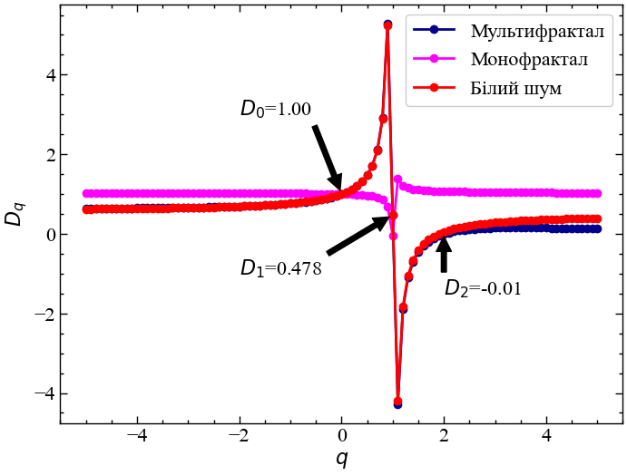
З представленого рисунку видно, що, по-переше, для всіх сигналів \(D_{0}=1\), що відповідає теоретичним міркуванням. Інформаційна розмірність \(D_{1}\) для мультифрактала та білого шуму однакова, що може говорити і про інформаційну зачущість обох сигналів. Для монофрактала вона близька до нуля. Кореляційна розмірність \(D_{2}\) показує, що загалом як WTI, так і білий шум доволі схожі: їх значення в більшості своїй постають незалежними один від одного. Це розбігається з тими висновками, що були зробені в попередній роботі, де наближення \(D_{2}\) до нуля вказувало на зростання ступеня корельованості системи. Для монофракталу \(D_{2}\) знаходиться на рівні 1, що вказує на вищий ступінь кореляцій у цьому сигналі, порівнюючи з мульти- та монофракталами.
7.1.4.9 Аналогії мультифракталів із термодинамікою
Використовуючи концепції MFDFA, ми можемо по-новому поглянути на часовий сигнал як на термодинамічну систему. В рамках MFDFA показник маси \(\tau(q)\) можна розглядати як аналоги вільної енергії, показник сингулярності \(\alpha\) як аналог внутрішньої енергії \(U\), мультифрактальний спектр \(f(\alpha)\) як ентропію. Дійсно, форма мультифрактального спектра нагадує залежність ентропії термодинамічної системи від енергії \(U\). Показники \(\alpha_{min}\) та \(\alpha_{max}\) можна охарактеризувати як верхній та нижній ліміти внутрішньої енергії системи. Функція \(Z(q)\) є формальним аналогом статистичної суми \(Z(\beta)\) в термодинаміці, де \(\beta=1/T=q\).

Окрім цього, ми можемо прорахувати “температуру” досліджуваного сигнала. Більш конкретно, мультифрактальну “питому теплоємність” \(C(q)\) [23] можна визначити як
\[ C(q) \equiv -\left(\partial^{2} \tau(q) \big/ \partial q^{2} \right) = -\left(\partial \alpha \big/ \partial q \right) \approx \tau(q+1) - 2\tau(q) + \tau(q-1). \]
Питома теплоємність, як міра швидкості зміни енергії, слугує індикатором явищ фазового переходу. У термодинамічній системі фаза характеризується однорідними фізичними властивостями, а фазовий перехід — стрибкоподібною зміною певних властивостей за критичної зовнішньої умови. Вивчення фазових переходів у мультифрактальному спектрі обмежувалося простими системами, такими як множина Кантора та логістична карта. Однак наш аналіз показує наявність фазових переходів [24] у мультифрактальному спектрі фінансових систем. Зокрема, “енергія” \(\alpha\) виявляє значні флуктуації в околі \(q_c\), які відображаються піком питомої теплоємності \(C(q_c)\).
C_q_multifrac = -np.gradient(alpha_multifrac, nq, edge_order=2)
C_q_monofrac = -np.gradient(alpha_monofrac, nq, edge_order=2)
C_q_white_noise = -np.gradient(alpha_white_noise, nq, edge_order=2)fig, ax = plt.subplots(1, 2)
ax[0].plot(nq, C_q_multifrac, linestyle='-', marker='o', label="Мультифрактал", color='darkblue')
ax[0].plot(nq, C_q_monofrac, linestyle='-', marker='o', label="Монофрактал", color='magenta')
ax[0].plot(nq, C_q_white_noise, linestyle='-', marker='o', label="Білий шум", color='red')
ax[0].set_xlabel(r"$q$")
ax[0].set_ylabel(r"$C(q)$")
ax[0].legend(loc='center left')
ax[1].plot(alpha_multifrac, C_q_multifrac, linestyle='-', marker='o', label="Мультифрактал", color='darkblue')
ax[1].plot(alpha_monofrac, C_q_monofrac, linestyle='-', marker='o', label="Монофрактал", color='magenta')
ax[1].plot(alpha_white_noise, C_q_white_noise, linestyle='-', marker='o', label="Білий шум", color='red')
ax[1].set_xlabel(r"$\alpha$")
fig.tight_layout(pad=0.3)
plt.show();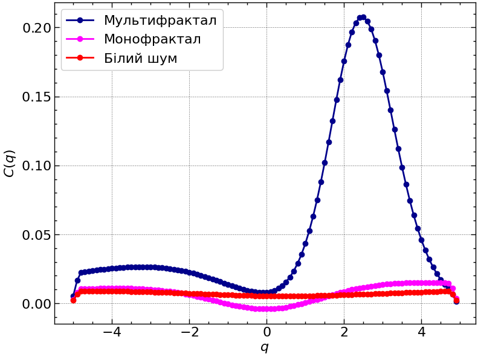
Рис. 7.23 демонструє, що \(C(q)\) досягає максимуму в діапазоні \(q\) від 2 до 3, що свідчить про те, що індекс WTI стає вкрай нерегулярним через велику флуктуацію катастрофи “COVID-19”, яка слугує квазіфазовим переходом досліджуваного індексу. Можна стверджувати, що колапс коронавірусної пандемії має найбільший вплив на мультифрактальність досліджуваного ряду.
7.2 Хід роботи
Звісно ж фрактальний аналіз усього ряду є важливим, але такий підхід ігнорує припущення про існування в часовій послідовності як монофрактальних, так і мультифрактальних ділянок. Тобто, ігнорується припущення про зміну ступеня складності з плином часу. Кількісні міри мультифрактальності, розраховані в рамках підходу ковзного вікна, є найбільш об’єктивними та практичними при аналізі систем. Окрім цього кількісні показники можуть бути використані як індикатори або індикатори-провісники аномальних явищ, або як базис для побудови іншої прогностичної моделі.
Повторно зчитаємо значення ряду із сайту FRED:
symbol = 'DCOILWTICO' # cимвол індексу, як указано на сайті FRED
start = "1986-01-01" # Дата початку зчитування даних
end = "2023-01-21" # Дата закінчення зчитування даних
wti = web.DataReader(symbol, 'fred', start, end) # зчитуємо значення ряду
time_ser = wti[symbol].copy() # зберігаємо саме ціни закриття
#------- фільтрація від'ємних значень -------
time_ser = time_ser.dropna() # видаляємо значення NaN
time_ser[time_ser.values<0] = 5 # замінюємо від'ємне значення на 5
#--------------------------------------------
xlabel = 'time, days' # підпис по вісі Ох
ylabel = symbol # підпис по вісі Оу
Увага
Виконайте цей блок, якщо хочете зчитати дані не з Yahoo! Finance або FRED, а із власного файлу. Зрозуміло, що й аналіз результатів, і висновки залежать від того з яким рядом ми працюємо
symbol = 'sMpa11' # Символ індексу
path = "databases\sMpa11.txt" # шлях по якому здійснюється зчитування файлу
data = pd.read_csv(path, # зчитування даних
names=[symbol])
time_ser = data[symbol].copy() # копіюємо значення кривої
# "напруга-видовження" до окремої змінної
xlabel = r'$\varepsilon$' # підпис по вісі Ох
ylabel = symbol # підпис по вісі ОуВиводимо досліджуваний ряд:
fig, ax = plt.subplots() # Створюємо порожній графік
ax.plot(time_ser.index, time_ser.values) # Додаємо дані до графіку
ax.legend([symbol]) # Додаємо легенду
ax.set_xlabel(xlabel) # Встановимо підпис по вісі Ох
ax.set_ylabel(ylabel) # Встановимо підпис по вісі Oy
plt.xticks(rotation=45) # оберт позначок по осі Ох на 45 градусів
plt.savefig(f'{symbol}.jpg') # Зберігаємо графік
plt.show(); # Виводимо графік
Деякі графіки будуть представляти парну побудову лише часового ряду та мультифрактального індикатора. Скористаємось функцією plot_pair(), що ми визначали в попередніх лабораторних:
def plot_pair(x_values,
y1_values,
y2_values,
y1_label,
y2_label,
x_label,
file_name,
clr="magenta"):
fig, ax = plt.subplots()
ax2 = ax.twinx()
ax2.spines.right.set_position(("axes", 1.03))
p1, = ax.plot(x_values,
y1_values,
"b-", label=fr"{y1_label}")
p2, = ax2.plot(x_values,
y2_values,
color=clr,
label=y2_label)
ax.set_xlabel(x_label)
ax.set_ylabel(f"{y1_label}")
ax.yaxis.label.set_color(p1.get_color())
ax2.yaxis.label.set_color(p2.get_color())
tkw = dict(size=2, width=1.5)
ax.tick_params(axis='x', **tkw)
ax.tick_params(axis='y', colors=p1.get_color(), **tkw)
ax2.tick_params(axis='y', colors=p2.get_color(), **tkw)
ax2.legend(handles=[p1, p2])
plt.savefig(file_name + ".jpg")
plt.show();7.2.0.1 Віконна процедура
Для подальших розрахунків знову скористаємось бібліотекою fathon, що ми використовували попередньо для виконання класичного аналізу детрендованих флуктуацій. Переваги саме цієї бібліотеки полягають у можливості використання процедури розрахунку розбиття ряду на сегменти починаючи з кінця ряду, оскільки довжина ряду не завжди дозволяє поділити його на локальні сегменти націло. Тобто, теоретично у нас залишається сегмент ряду, що не піддається розбиттю на локальні сегменти. Тому повторна процедура розбиття на локальні сегменти починаючи з кінця ряду дозволяє обійти дану проблему. Для спрощення представлення теоретичного матеріалу ми не стали імплементувати дану процедуру, але вона доступна в бібліотеці fathon. Окрім цього, бібліотека надає можливість обчислення крос-кореляційного аналізу детрендованих флуктуацій та його мультифрактального аналогу.
import fathon
from fathon import fathonUtils as fuПриступимо до ініціалізації параметрів.
window = 500 # розмір вікна
tstep = 5 # крок вікна
ret_type = 4 # вид ряду:
# 1 - вихідний,
# 2 - детрендований (різниця між теп. значенням та попереднім)
# 3 - прибутковості звичайні,
# 4 - стандартизовані прибутковості,
# 5 - абсолютні значення (волатильності)
# 6 - стандартизований ряд
win_beg = 10 # Початкова ширина сегменту
win_end = window-1 # Кінцева ширина сегменту
scales_exp_wind = fu.linRangeByStep(win_beg, win_end) # генеруємо масив
# лінійно розділених
# елементів
rev = True # чи повторювати розрахунок ф-ції флуктуацій з кінця
length = len(time_ser.values)
q_min = -5 # мінімальне значення q
q_max = 5 # максимальне значення q
q_step = 1 # крок збільшення q
nq = np.arange(q_min,
q_max+q_step,
q_step)
order = 1 # порядок поліноміального тренду
delta_alph = []
delta_spec = []
max_alph = []
min_alph = []
mean_alph = []
alpha_zero = []
delta_alph_right = []
delta_alph_left = []
assym = []
delta_s = []
D_0 = []
D_1 = []
D_2 = []
D_left = []
D_right = []
C_q = []
h_q = []
tau_q = []
D_q = []
mfSpect = []
alpha = []
hFI = []
alphaCF = []
C_q_area_wind = []Розпочнемо процедуру рухомого вікна, що об’єднуватиме у собі попередні етапи розрахунків:
for i in tqdm(range(0,length-window,tstep)):
# відбираємо фрагменти
fragm = time_ser.iloc[i:i+window].copy()
# виконуємо процедуру трансформації ряду
fragm = transformation(fragm, ret_type)
# знаходження кумулятивного ряду
cumulative = fu.toAggregated(fragm)
# інціалізації процедури mfdfa
pymfdfa = fathon.MFDFA(cumulative)
# обчислення функції флуктуацій та отримання узагальненого показника Херста
n, F = pymfdfa.computeFlucVec(scales_exp_wind, nq, revSeg=rev, polOrd=order)
Hq_fragm, _ = pymfdfa.fitFlucVec()
# отримання показника tau
tau_wind = nq * Hq_fragm - 1
# отримання показника сингулярності
alpha_wind = np.gradient(tau_wind, nq, edge_order=2)
# отримання мультифрактального спектра
f_wind = nq * alpha_wind - tau_wind
# отримання мультифрактальної теплоємності
C_q_wind = -np.gradient(alpha_wind, nq, edge_order=2)
# інтегральний показник C(q)
C_q_area = cumulative_trapezoid(np.abs(C_q_wind), nq, initial=0)[-1]
# ширина спектра мультифрактальності
delta_alpha_wind = alpha_wind.max() - alpha_wind.min()
# відстань між кінцями спектра мультифрактальності
delta_phi = f_wind[-1] - f_wind[0]
# максимальне значення альфи
maximal_alpha = alpha_wind.max()
# мінімальне значення альфи
minimal_alpha = alpha_wind.min()
# середнє значення альфи
mean_alpha = np.mean(alpha_wind)
# значення сингулярності при якому спектр приймає максимальне значення (α0)
alpha_0 = alpha_wind[np.nanargmax(f_wind)]
# ширина правого хвоста спектра
delt_alpha_right = maximal_alpha - alpha_0
# ширина лівого хвоста спектра
delt_alpha_left = alpha_0 - minimal_alpha
# різниця між шириною лівого та правого хвостів
delt_s = delt_alpha_right - delt_alpha_left
# показник асиметрії
A = (delt_alpha_left - delt_alpha_right)/(delt_alpha_left + delt_alpha_right)
# визначаємо індекс при q=0
difference_zero = np.absolute(nq-0)
idx_zero = difference_zero.argmin()
# визначаємо індекс при q=1
difference_one = np.absolute(nq-1)
idx_one = difference_one.argmin()
# визначаємо індекс при q=2
difference_two = np.absolute(nq-2)
idx_two = difference_two.argmin()
# ініціалізуємо масиви під розмірності
Dq_wind = np.zeros(len(nq))
# Визначаємо узагальнені фрактальні розмірності там де q!=1
Dq_wind[nq!=nq[idx_one]] = tau_wind[nq!=nq[idx_one]] / (nq[nq!=nq[idx_one]] - 1)
# Визначаємо окремо узагальнені фрактальні розмірності при q=1
Dq_wind[nq==nq[idx_one]] = -tau_wind[nq==nq[idx_one]]
# Узагальнені фрактальні розмірності отримані з мультифрактального спектра
D_zero = f_wind[nq==nq[idx_zero]]
D_one = f_wind[nq==nq[idx_one]]
D_two = 2 * alpha_wind[nq==nq[idx_two]] - f_wind[np.where(alpha_wind[nq==nq[idx_two]])]
# відстань від центру розподілу узагальнених розмірностей до лівого кінця
delta_D_Q_left = Dq_wind[nq==q_min] - Dq_wind[nq==nq[idx_zero]]
# відстань від центру розподілу узагальнених розмірностей до правого кінця
delta_D_Q_right = Dq_wind[nq==nq[idx_zero]] - Dq_wind[nq==q_max]
# індекс h-флуктуацій (hFI)
fluct = np.sum(np.gradient(np.gradient(Hq_fragm, nq, edge_order=2), nq, edge_order=2) ** 2)/(2 * np.max(np.abs(nq)) + 2)
# кумулятивний індекс інкрементів узагальнених показників Херста (αCF)
incr = np.sum(np.gradient(Hq_fragm, edge_order=2) ** 2 / np.gradient(nq, edge_order=2))
delta_alph.append(delta_alpha_wind)
delta_spec.append(delta_phi)
max_alph.append(maximal_alpha)
min_alph.append(minimal_alpha)
mean_alph.append(mean_alpha)
alpha_zero.append(alpha_0)
delta_alph_right.append(delt_alpha_right)
delta_alph_left.append(delt_alpha_left)
delta_s.append(delt_s)
assym.append(A)
D_0.append(D_zero)
D_1.append(D_one)
D_2.append(D_two)
D_left.append(delta_D_Q_left)
D_right.append(delta_D_Q_right)
C_q.append(C_q_wind)
mfSpect.append(f_wind)
alpha.append(alpha_wind)
hFI.append(fluct)
alphaCF.append(incr)
C_q_area_wind.append(C_q_area)
h_q.append(Hq_fragm)
tau_q.append(tau_wind)
D_q.append(Dq_wind)100%|██████████| 1768/1768 [04:11<00:00, 7.03it/s]Зберігаємо абсолютні значення показників до текстових файлів.
# перелік назв кожного індикатора для збереження до txt
subtitle_of_txts = ['delta_alpha', 'delta_f', 'max_alpha', 'min_alpha', 'mean_alpha',
'zero_alpha', 'delta_alpha_right', 'delta_alpha_left', 'assymetry',
'delta_s', 'D_0', 'D_1', 'D_2', 'hFI', 'alphaCF', 'C_q_area',
'delta_d_left', 'delta_d_right']
# перелік вихідних значень індикаторів для збереження до txt
mfdfa_indicators = [delta_alph, delta_spec, max_alph, min_alph, mean_alph, alpha_zero,
delta_alph_right, delta_alph_left, assym, delta_s, D_0, D_1, D_2,
hFI, alphaCF, C_q_area_wind, D_left, D_right]
for i in range(len(subtitle_of_txts)):
np.savetxt(f"mfdfa_{subtitle_of_txts[i]}_name={symbol}_ret={ret_type}_ \
order={order}_qmin={q_min}_qmax={q_max}_qinc={q_step}_ \
wind={window}_step={tstep}_windbeg={win_beg}_winden={win_end}.txt", mfdfa_indicators[i])Проаналізуємо динаміку отриманих індикаторів.
7.2.1 Ширина спектра мультифрактальності (\(\Delta\alpha\))
Першим і одним із найпрактичніших індикаторів складності системи є ширина спектра мультифрактальності, \(\Delta\alpha\), яку можна подати як різницю між максимальним ступенем синґулярності та мінімальним:
\[ \Delta\alpha = \alpha_{max} - \alpha_{min}. \tag{7.10}\]
Якщо проводити аналогію з термодинамічними показниками, то в такому разі ширина спектра мультифрактальності становитиме різницю між найбільшим і найменшим значенням внутрішньої енергії системи. Розглянемо динаміку даного показника для ринку нафти.
measure_label = r'$\Delta\alpha$'
file_name = f"mfdfa_delta_alpha_name={symbol}_ret={ret_type}_order={order}_qmin={q_min}_qmax={q_max}_qinc={q_step}_ \
wind={window}_step={tstep}_windbeg={win_beg}_winden={win_end}"plot_pair(time_ser.index[window:length:tstep],
time_ser.values[window:length:tstep],
delta_alph,
ylabel,
measure_label,
xlabel,
file_name,
clr='red')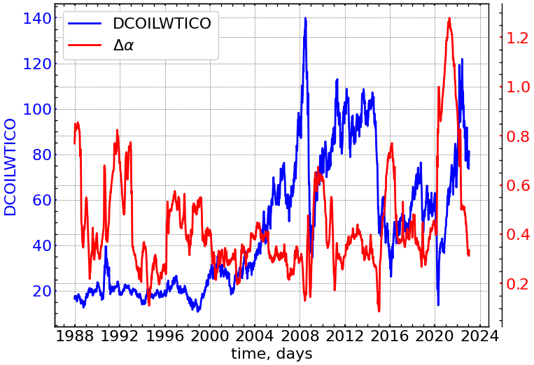
На 7.25 видно, що ширина спектра мультифрактальності зростає під час кризових подій, що вказує на зростання загального ступеня складності та періодизації. Тобто, даний показник слугує ще одним підтвердженням, що трейдери на ринку, наприклад, нафти поводять себе у синхронній манері в ході кризи. Зростання загального ступеня мультифрактальності є індикатором зростання кореляцій в системі, що підтверджувалось і попередніми індикаторами складності.
7.2.2 Різниця між кінцями спектра мультифрактальності (\(\Delta f\))
Однак проста ширина спектра мультифрактальності не показує, наприклад, флуктуації якого типу є найвірогіднішими, елементи якого типу щільності відіграють найбільшу роль у зростанні або зниженні складності системи. Надалі було запропоновано такий показник мультифрактальності як \(\Delta f\), який можна представити наступним чином [25–27]:
\[ \Delta f = f(\alpha_{min}) - f(\alpha_{max}). \tag{7.11}\]
measure_label = r'$\Delta f$'
file_name = f"mfdfa_delta_f_name={symbol}_ret={ret_type}_order={order}_qmin={q_min}_qmax={q_max}_qinc={q_step}_ \
wind={window}_step={tstep}_windbeg={win_beg}_winden={win_end}"plot_pair(time_ser.index[window:length:tstep],
time_ser.values[window:length:tstep],
delta_spec,
ylabel,
measure_label,
xlabel,
file_name,
clr='brown')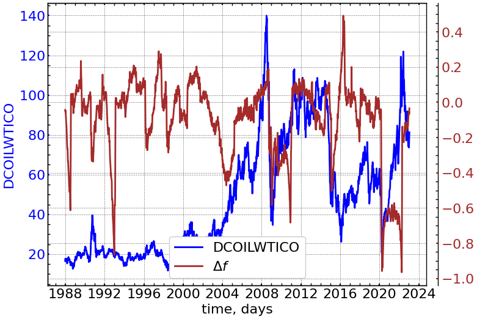
Сенс даного показника полягає в тому, що він дає нам змогу визначити ступінь імовірності появи елементів з великими щільностями і малими. Якщо цей показник менший за нуль, тоді флуктуації, що відображають елементи з найбільшою концентрацією (найбільшими фруктуаціями), мають найбільшу ймовірність. Якщо цей показник вищий за нуль, тоді флуктуації, що відображають малоконцентровані елементи (малі флуктуації), визначають динаміку системи. Якщо цей показник перебуває в нулі, тоді як високосингулярні, так і малосингулярні елементи мають рівномірний внесок у динаміку системи.
Звертаючись до термодинаміки, можна згадати, що \(f(\alpha)\) — це ентропія системи. Тоді стає зрозуміло, що варіативність спектра мультифрактальності дає нам змогу визначити ступінь внеску висококонцентрованих і малоконцентрованих елементів у мінімізацію ентропії системи. Лівостороння асиметрія мультифрактального спектра \((\Delta f > 0)\) підказує нам, що висококонцентровані елементи фазового простору дають найбільший внесок у мінімум термодинамічної ентропії. Іншими словами, ці елементи і є двигуном зростання впорядкованості динаміки системи. Своєю чергою, правостороння асиметрія мультифрактального спектра \((\Delta f < 0)\) вказує на мінімізацію ентропії за рахунок малоконцентрованих елементів. Симетрія кінців спектра вказує на рівний внесок високощільних і розріджених областей на мінімізацію ентропії. Як уже згадувалося, трапляються випадки, коли мультифрактальний спектр практично сходиться в сингулярність (одну точку). У такому разі ми маємо справу з простою монофрактальною системою, яка в нашому випадку характеризувалася незалежними і нормально розподіленими випадковими величинами. Для такого спектра і \(\Delta\alpha\), і \(\Delta f\) будуть прямувати до нуля. Для такого часового ряду вже спостерігається не множина фрактальних розмірностей, а тільки один фрактальний показник, \(f[\alpha(q=0)] = 1\). Це саме та область, де система досягає своєї термодинамічної рівноваги — максимуму ентропії. У свою чергу \(\Delta f\) можна охарактеризувати як різницю ентропій за граничної максимальної та мінімальної внутрішньої енергії системи.
7.2.3 Ширина лівого (\(\Delta\alpha_{L}\)) та правого (\(\Delta\alpha_{R}\)) хвостів мультифрактального спектра
Крім цього, ми можемо дослідити ступінь складності динаміки окремо високощільних областей (з великими флуктуаціями) і низькощільних (з малими флуктуаціями). Для цього виміряємо ширину окремо лівого і правого хвостів. Ширину лівого хвоста визначимо як
\[ \Delta\alpha_{L} = \alpha_{0} - \alpha_{min}, \tag{7.12}\]
а ширину правого хвоста як
\[ \Delta\alpha_{R} = \alpha_{max} - \alpha_{0}. \tag{7.13}\]
У свою чергу ширина лівого хвоста вимірює ступінь складності флуктуацій з великою амплітудою, а ширина правого хвоста — малих. Зростання ширини кожного з хвостів відображатиме зростання ступеня кореляцій між елементами.
fig, ax = plt.subplots(1, 1)
ax2 = ax.twinx()
ax3 = ax.twinx()
ax2.spines.right.set_position(("axes", 1.03))
ax3.spines.right.set_position(("axes", 1.12))
p1, = ax.plot(time_ser.index[window:length:tstep],
time_ser.values[window:length:tstep],
"b-", label=fr"{ylabel}")
p2, = ax2.plot(time_ser.index[window:length:tstep],
delta_alph_left, color="r", label=r"$\Delta\alpha_{L}$")
p3, = ax3.plot(time_ser.index[window:length:tstep],
delta_alph_right, color="g", label=r"$\Delta\alpha_{R}$")
ax.set_xlabel(xlabel)
ax.set_ylabel(f"{ylabel}")
ax.yaxis.label.set_color(p1.get_color())
ax2.yaxis.label.set_color(p2.get_color())
ax3.yaxis.label.set_color(p3.get_color())
tkw = dict(size=4, width=1.5)
ax.tick_params(axis='y', colors=p1.get_color(), **tkw)
ax2.tick_params(axis='y', colors=p2.get_color(), **tkw)
ax3.tick_params(axis='y', colors=p3.get_color(), **tkw)
ax.tick_params(axis='x', **tkw)
ax3.legend(handles=[p1, p2, p3])
plt.savefig(f"mfdfa_delta_alpha_left_right_name={symbol}_ret={ret_type}_order={order}_qmin={q_min}_qmax={q_max}_qinc={q_step}_ \
wind={window}_step={tstep}_windbeg={win_beg}_winden={win_end}.jpg")
plt.show();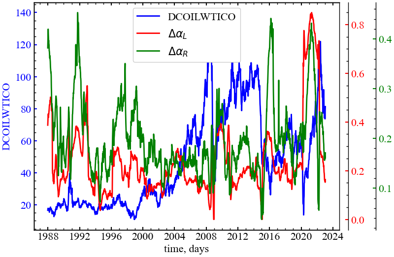
Із Рис. 7.27 видно, що досліджувані індикатори реагують у характерний спосіб на кризові події. Ширина лівої сторони спектра мультифрактальності зростає під час 1992, 1996-2000, 2008, 2016 років та коронавірусної пандемії. Це вказує на домінацію висококонцентрованих флуктуацій (з великою амплітудою коливань). Окрім цього, зростання ширини лівого хвоста вказує на те, що флуктуації з великою амплітудою коливань характеризуються зростанням ступеня кореляцій під час кризових подій, що в свою чергу може слугувати індикатором зростання процесів самоорганізації.
Хоча і меншою, але не менш примітною є динаміка ширини правого хвоста мультифрактального спектра. Цей індикатор працює майже аналогічно до ширини лівого хвоста, але характеризує динаміку малоконцентрованих величин — флуктуацій з малою амплітудою коливань. Майже синхронна динаміка обох показників указує на зростання впливу коливань як флуктуацій з великою амплітудою коливань, так і флуктуацій з малою амплітудою коливань. Тобто, два типи флуктуацій є джерелом зростання нелінійних кореляцій під час кризових подій.
7.2.4 Показник сингулярності \(\alpha\) та його різновиди
В якості можливих індикаторів складності системи можна взяти \(\alpha_{min}\), \(\alpha_{max}\), \(\alpha_{mean}\) і \(\alpha_0\), які, відповідно, характеризують мінімальну силу сингулярності, максимальну, середню і сингулярність за умови рівноважного врахування як великих флуктуацій, так і малих.
fig, ax = plt.subplots(1, 1)
ax2 = ax.twinx()
ax3 = ax.twinx()
ax4 = ax.twinx()
ax5 = ax.twinx()
ax3.spines.right.set_position(("axes", 1.08))
ax4.spines.right.set_position(("axes", 1.18))
ax5.spines.right.set_position(("axes", 1.27))
p1, = ax.plot(time_ser.index[window:length:tstep], time_ser[window:length:tstep], "b-", label=fr"{ylabel}")
p2, = ax2.plot(time_ser.index[window:length:tstep], max_alph, "r-", label=r"$\alpha_{max}$")
p3, = ax3.plot(time_ser.index[window:length:tstep], min_alph, "g-", label=r"$\alpha_{min}$")
p4, = ax4.plot(time_ser.index[window:length:tstep], mean_alph, "c-", label=r"$\alpha_{mean}$")
p5, = ax5.plot(time_ser.index[window:length:tstep], alpha_zero, "m-", label=r"$\alpha_{0}$")
ax.set_xlabel(xlabel)
ax.set_ylabel(fr"{ylabel}")
ax.yaxis.label.set_color(p1.get_color())
ax2.yaxis.label.set_color(p2.get_color())
ax3.yaxis.label.set_color(p3.get_color())
ax4.yaxis.label.set_color(p4.get_color())
ax5.yaxis.label.set_color(p5.get_color())
tkw = dict(size=4, width=1.5)
ax.tick_params(axis='y', colors=p1.get_color(), **tkw)
ax2.tick_params(axis='y', colors=p2.get_color(), **tkw)
ax3.tick_params(axis='y', colors=p3.get_color(), **tkw)
ax4.tick_params(axis='y', colors=p4.get_color(), **tkw)
ax5.tick_params(axis='y', colors=p5.get_color(), **tkw)
ax.tick_params(axis='x', **tkw, pad=10)
ax5.legend(handles=[p1, p2, p3, p4, p5])
plt.savefig(f"mfdfa_alpha_min_max_mean_zero_name={symbol}_ret={ret_type}_order={order}_qmin={q_min}_qmax={q_max}_qinc={q_step}_ \
wind={window}_step={tstep}_windbeg={win_beg}_winden={win_end}.jpg", bbox_inches="tight")
plt.show()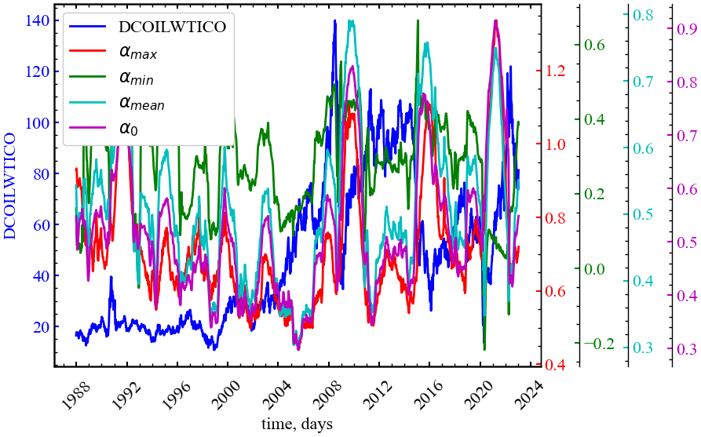
Як видно з Рис. 7.28, усі показники сингулярності зростають в області фінансового фазового переходу зі стану стабільності до стану кризи. Це говорить про зростання складності системи: різкому прирості кількості агентів, що задіяні в самоорганізованому розвитку досліджуваної системи. З погляду термодинаміки можна було б сказати, що при фінансових крахових подіях зростає внутрішня енергія системи.
7.2.5 Тип довгого хвоста мультифрактального спектра (\(\Delta S\))
Крім такої міри як, наприклад, \(\Delta f\) можна представити й інші міри асиметрії мультифрактального спектра. Наприклад, ми можемо визначити тип довгого хвоста мультифрактального спектра за допомогою показника \(\Delta S\) [28]:
\[ \Delta S = \Delta\alpha_{R} - \Delta\alpha_{L}. \tag{7.14}\]
Якщо \(\Delta S < 0\), мультифрактальний спектр має довгий лівий хвіст, що свідчить про чутливість часового ряду до локальних флуктуацій з великою амплітудою. Якщо \(\Delta S > 0\), мультифрактальний спектр має довгий правий хвіст, який вказує на чутливість структури сигналу до локальних флуктуацій з малою амплітудою коливань. У тих випадках, коли високо- і низькофлуктуаційні компоненти сигналу співставні, спектр сингулярностей буде приблизно симетричним і \(\Delta\alpha_{R} = \Delta\alpha_{L}\).
measure_label = r'$\Delta S$'
file_name = f"mfdfa_delta_s_name={symbol}_ret={ret_type}_order={order}_qmin={q_min}_qmax={q_max}_qinc={q_step}_ \
wind={window}_step={tstep}_windbeg={win_beg}_winden={win_end}"plot_pair(time_ser.index[window:length:tstep],
time_ser.values[window:length:tstep],
delta_s,
ylabel,
measure_label,
xlabel,
file_name,
clr='darkorange')
З огляду на Рис. 7.29 видно, що \(\Delta S < 0\), що свідчить про те, що найбільш крахові ділянки нафтового ринку зумовлені флуктуаціями з великою амплітудою коливань. Особливо помітними тут предстають кризи 1992 та 2020 років.
7.2.6 Показник асиметрії \(A\)
Далі ми можемо визначити наступний параметр асиметрії [29–31]:
\[ A = (\Delta\alpha_{L} - \Delta\alpha_{R})\big/(\Delta\alpha_{R} + \Delta\alpha_{L}) = -\Delta S \big/ \Delta\alpha. \tag{7.15}\]
Параметр асиметрії пов’язаний з предомінуючим типом коливань у досліджуваній системі. Якщо \(A=0\) (\(\Delta\alpha_{L}=\Delta\alpha_{R}\)), динаміку системи представляє симетричний спектр. Якщо \(A<0\) (\(\Delta\alpha_{L}<\Delta\alpha_{R}\)), мультифрактальний спектр має правосторонню асиметрію, що підкреслює сильніший вплив малих флуктуацій на мультифрактальність. І навпаки, коли \(A>0\) (\(\Delta\alpha_{L}>\Delta\alpha_{R}\)), тоді ми маємо справу з лівостороннім спектром, який позначає більшу неоднорідність для великих флуктуацій і вказує на те, що в часовому ряді переважає мультифрактальна природа неоднорідностей з високими щільностями. Оскільки асиметрію виявляють за знаком \(A\), що еквівалентний знаку \(\Delta S\), то, ґрунтуючись тільки по знаку \(\Delta S\), можна зробити висновки як про тип довгого хвоста, так і про знак показника \(A\) мультифрактального спектра, тобто нечутливість і тип домінантних коливань мультифрактальності часового ряду.
measure_label = r'$A$'
file_name = f"mfdfa_A_name={symbol}_ret={ret_type}_order={order}_qmin={q_min}_qmax={q_max}_qinc={q_step}_ \
wind={window}_step={tstep}_windbeg={win_beg}_winden={win_end}"plot_pair(time_ser.index[window:length:tstep],
time_ser.values[window:length:tstep],
assym,
ylabel,
measure_label,
xlabel,
file_name,
clr='darkviolet')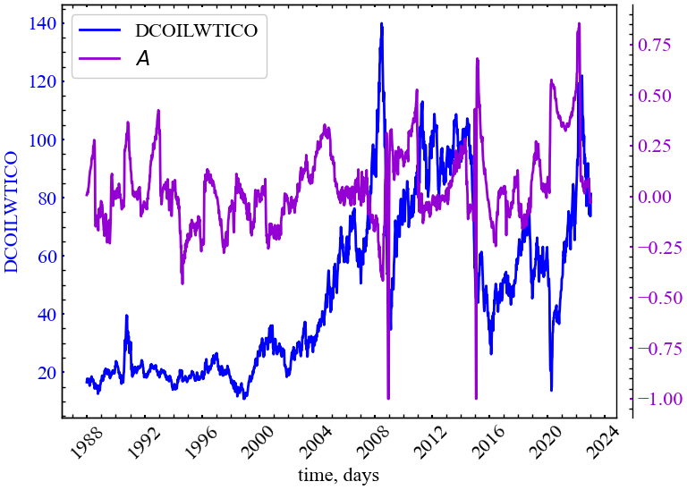
З Рис. 7.30 видно, що, як правило, показник асиметрії зростає під час крахових подій і вказує на домінацію лівостороннього спектра (висококонцентрованих флуктуацій з великою амплітудою коливань). Окрім цього видно, що, наприклад, для криз 2008 та 2015-2016 років спостерігалась помітна короткочасна правостороння асиметрія, що характеризується швидкоплинним сплеском показника асиметрії у сторону від’ємних значень. Асоціювати малі та великі флуктуації з конкретними настроями або поведінковими патернами ринку доволі складно. На даний момент ми можемо відзначити тільки те, що дані події представляли найбільш багату варіацію як короткострокових, так і довгострокових кореляцій.
7.2.7 Індекс \(h\)-флуктуацій (\(hFI\))
Флуктуацію можна проаналізувати за допомогою другої похідної узагальненого показника Херста. Зауважимо, що амплітуда другої похідної у випадку мультифрактальних сигналів більша, ніж для монофрактальних. Для одержання потрібної інформації з \(h(q)\) було запропоновано \(h\)-індекс флуктуації \((hFI)\) [32], що визначається як степінь другої похідної від \(h(q)\):
\[ hFI = \frac{1}{2|q_{max}|+2}\sum_{q=q_{min}-2}^{q_{max}}\left[ h(q) - 2h(q-1) + h(q-2) \right]^{2}. \tag{7.16}\]
Чим вище значення даного показника, тим вища самоорганізованість системи.
measure_label = r'$hFI$'
file_name = f"mfdfa_hFI_name={symbol}_ret={ret_type}_order={order}_qmin={q_min}_qmax={q_max}_qinc={q_step}_ \
wind={window}_step={tstep}_windbeg={win_beg}_winden={win_end}"plot_pair(time_ser.index[window:length:tstep],
time_ser.values[window:length:tstep],
hFI,
ylabel,
measure_label,
xlabel,
file_name,
clr='green')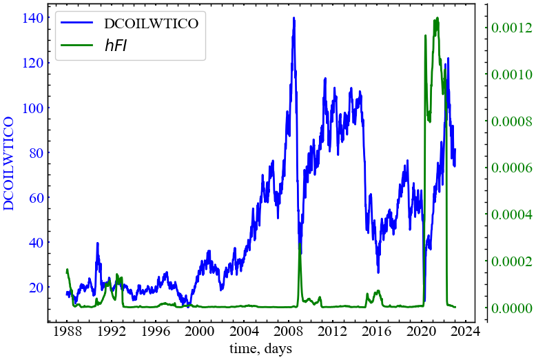
Видно, що за \(hFI\) найвищий ступінь мультифрактальності проявляється саме для криз 1992, 2008, 2016 та 2020 років. Дані крахові події включають в себе найбільшу кількість різноманітних факторів, що впливали на динаміку досліджуваної системи. Особливо помітно це для коронавірусної пандемії.
7.2.8 Кумулятивний індекс інкрементів узагальнених показників Херста (\(\alpha CF\))
Кумулятивна функція квадратів інкрементів (\(\alpha CF\)) [33] узагальнених показників Херста між послідовними моментними порядками є більш надійним показником розподілу узагальнених показників Херста.
measure_label = r'$\alpha CF$'
file_name = f"mfdfa_alphaCF_name={symbol}_ret={ret_type}_order={order}_qmin={q_min}_qmax={q_max}_qinc={q_step}_ \
wind={window}_step={tstep}_windbeg={win_beg}_winden={win_end}"plot_pair(time_ser.index[window:length:tstep],
time_ser.values[window:length:tstep],
alphaCF,
ylabel,
measure_label,
xlabel,
file_name,
clr='crimson')
Представлений кумулятивний індекс дещо відрізняється від \(hFI\), але за логікою приблизно однаковий: події з найвищим ступенем мультифрактальності характеризуються вищою амплітудою \(\alpha CF\). Представлений показник виділяє ті самі кризи, що й попередній, але динаміка цього показника більш виразна, що робить його більш надійним для ідентифікації періодів самоорганізації системи.
7.2.9 Інтегральна мультифрактальна теплоємність \(C(q)\)
Загальний ступінь мультифрактальності, інтегральну мультифрактальну питому теплоємність (\(C_{area}\)), можна виразити через рівняння (7.17):
\[ C_{area} = \int C(q)dq. \tag{7.17}\]
Розрахуємо і проаналізуємо динаміку цього показника.
measure_label = r'$C_{area}$'
file_name = f"mfdfa_C_q_area_name={symbol}_ret={ret_type}_order={order}_qmin={q_min}_qmax={q_max}_qinc={q_step}_ \
wind={window}_step={tstep}_windbeg={win_beg}_winden={win_end}"plot_pair(time_ser.index[window:length:tstep],
time_ser.values[window:length:tstep],
C_q_area_wind,
ylabel,
measure_label,
xlabel,
file_name,
clr='darkslateblue')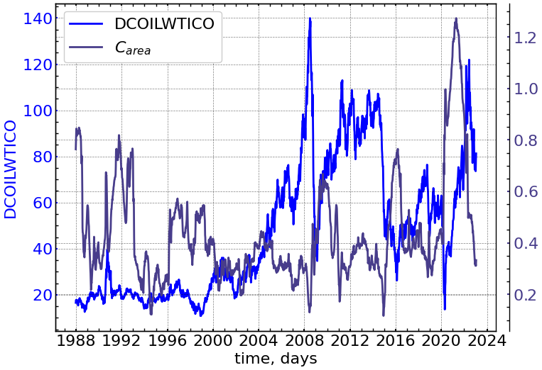
З представленого рисунку видно, що динаміка інтегральної теплоємності дуже подібна до ширини спектра мультифрактальності. Тобто, \(C_{area}\) є показником складності, що вказує на ступінь самоорганізованості фінансового фазового переходу. Видно, що фінансові крахи представляють доволі трендостійку динаміку, що є наслідком цілеспрямованих та колективних дій трейдерів на ринку.
7.2.10 Хаусдорфова розмірність (\(D_{0}\))
Як уже зазначалось, \(D_{0}\) представляє верхню межу змін розмірностей фрактальних підмножин атрактора системи. Інформацію про статистичні властивості системи він не містить і не представляє особливої цінності.
measure_label = r'$D_{0}$'
file_name = f"mfdfa_D_0_area_name={symbol}_ret={ret_type}_order={order}_qmin={q_min}_qmax={q_max}_qinc={q_step}_ \
wind={window}_step={tstep}_windbeg={win_beg}_winden={win_end}"plot_pair(time_ser.index[window:length:tstep],
time_ser.values[window:length:tstep],
D_0,
ylabel,
measure_label,
xlabel,
file_name,
clr='darkred')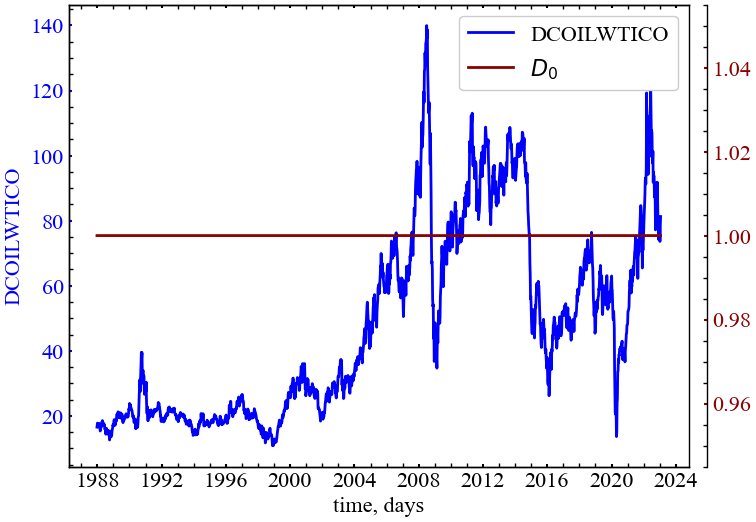
7.2.11 Інформаційна розмірність (\(D_{1}\))
Інформаційна розмірність тісно пов’язана з інформаційною ентропією Шеннона. Чим вище значення \(D_1\), тим швидше збільшується ентропія, що є показником того, наскільки мало ми знаємо про поточний стан системи. Зі зменшенням \(D_1\) ентропія знижується, що, своєю чергою, свідчить про збільшення асиметрії в просторі, зменшення складності та розширення нашого розуміння поточного стану системи. Це також означає, що для опису можливих конфігурацій системи нам буде потрібно менше інформації.
measure_label = r'$D_{1}$'
file_name = f"mfdfa_D_1_area_name={symbol}_ret={ret_type}_order={order}_qmin={q_min}_qmax={q_max}_qinc={q_step}_ \
wind={window}_step={tstep}_windbeg={win_beg}_winden={win_end}"plot_pair(time_ser.index[window:length:tstep],
time_ser.values[window:length:tstep],
D_1,
ylabel,
measure_label,
xlabel,
file_name,
clr='darkred')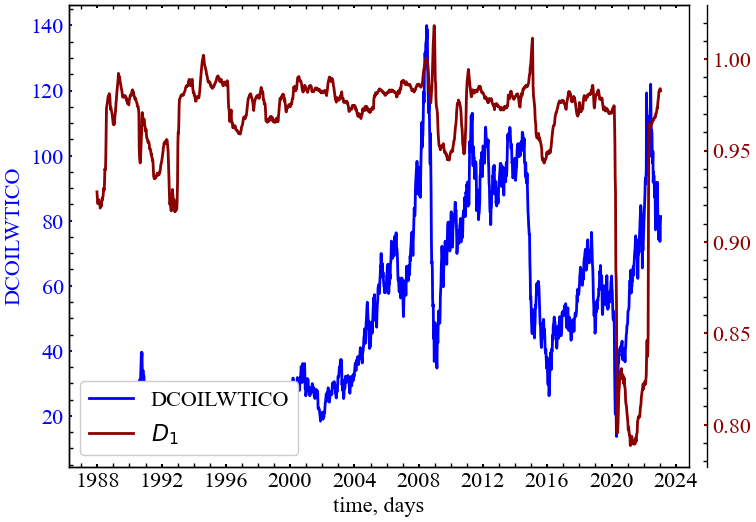
На Рис. 7.35 видно, що інформаційна розмірність характеризується спадом під час крахових подій. Це вказує на зростання ступеня впорядкованості системи та колективної атракції агентів ринку до конкретної області фазового простору досліджуваної системи.
7.2.12 Кореляційна розмірність (\(D_{2}\))
Кореляційну розмірність, аналогічно інформаційній розмірності, можна подати як тангенс кута нахилу лінії регресії, побудованої в логарифмічному масштабі, щодо залежності кореляційного інтеграла \(C(\varepsilon)\) від \(\varepsilon\). Подібно до \(D_1\), кореляційна розмірність також визначає, як швидко змінюється значення кореляційного інтеграла.
measure_label = r'$D_{2}$'
file_name = f"mfdfa_D_2_area_name={symbol}_ret={ret_type}_order={order}_qmin={q_min}_qmax={q_max}_qinc={q_step}_\
wind={window}_step={tstep}_windbeg={win_beg}_winden={win_end}"plot_pair(time_ser.index[window:length:tstep],
time_ser.values[window:length:tstep],
D_2,
ylabel,
measure_label,
xlabel,
file_name,
clr='darkred')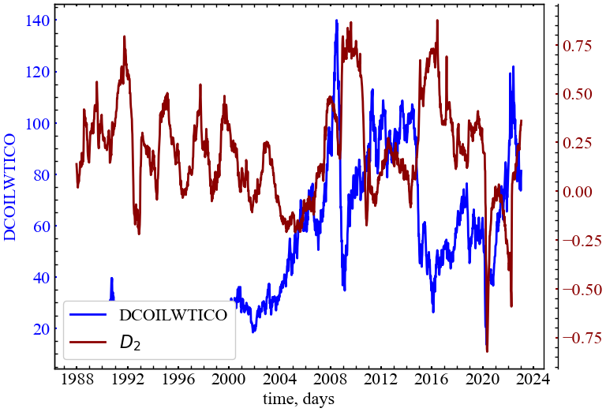
Кореляційна розмірність на Рис. 7.36 характеризується зростанням у передкризовий період та спадом під час кризи. Це говорить про те, що більшість агентів ринку починає орієнтуватися на один конкретний вектор розвитку системи.
7.2.13 Кривизна лівого (\(\Delta D_{L}\)) та правого (\(\Delta D_{R}\)) хвостів розподілу узагальнених фрактальних розмірностей
Охарактеризувати ступінь цієї складності можна за кривизною окремо правого та лівого хвостів узагальнених фрактальних розмірностей. Праву сторону (\(\Delta D_{R}\)) можна визначити як
\[ \Delta D_{R} = D_0 - D_{q_{max}}. \tag{7.18}\]
І чим більшим буде значення цієї міри, тим сильнішим буде ступінь впливу елементів із найбільшою концентрацією (щільністю, амплітудою флуктуацій) на загальну складність системи.
Кривизна лівого хвоста кривої узагальнених фрактальних розмірностей (\(\Delta D_{L}\)):
\[ \Delta D_{L} = D_{q_{min}} - D_{0}. \tag{7.19}\]
Цей показник буде говорити нам про те, наскільки сильним є вплив найменш концентрованих елементів на складність системи.
fig, ax = plt.subplots(1, 1)
ax2 = ax.twinx()
ax3 = ax.twinx()
ax2.spines.right.set_position(("axes", 1.03))
ax3.spines.right.set_position(("axes", 1.12))
p1, = ax.plot(time_ser.index[window:length:tstep],
time_ser.values[window:length:tstep],
"b-", label=fr"{ylabel}")
p2, = ax2.plot(time_ser.index[window:length:tstep],
D_left, color="g", label=r"$\Delta D_{L}$")
p3, = ax3.plot(time_ser.index[window:length:tstep],
D_right, color="r", label=r"$\Delta D_{R}$")
ax.set_xlabel(xlabel)
ax.set_ylabel(f"{ylabel}")
ax.yaxis.label.set_color(p1.get_color())
ax2.yaxis.label.set_color(p2.get_color())
ax3.yaxis.label.set_color(p3.get_color())
tkw = dict(size=4, width=1.5)
ax.tick_params(axis='y', colors=p1.get_color(), **tkw)
ax2.tick_params(axis='y', colors=p2.get_color(), **tkw)
ax3.tick_params(axis='y', colors=p3.get_color(), **tkw)
ax.tick_params(axis='x', **tkw)
ax3.legend(handles=[p1, p2, p3])
plt.savefig(f"mfdfa_delta_D_left_right_name={symbol}_ret={ret_type}_order={order}_qmin={q_min}_qmax={q_max}_qinc={q_step}_ \
wind={window}_step={tstep}_windbeg={win_beg}_winden={win_end}.jpg")
plt.show();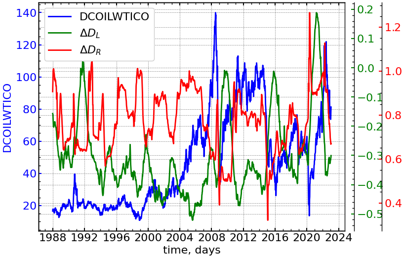
На рисунку (Рис. 7.37) видно, що спостерігаються етапи, при який два показники можуть вести себе як асинхронно, так і синхронно. Для 1992 року видно, що у передкризовий етап спостерігалась короткочасна домінація великих флуктуацій, на що і вказує \(\Delta D_{R}\). Під час краху спостерігалась домінація малоконцентрованих елементів, що демонструє зростання \(\Delta D_{L}\). Для 2001 року бачимо зростання впливу правого хвоста і зменшення впливу лівого. Для краху 2008 року видно зростання впливу висококонцентрованих елементів напередодні кризи. Після цього домінують малоконцентровані елементи. Бачимо зростання впливу малоконцентрованих елементів під час кризи 2016 року, і закономірне зменшення участі великоконцентрованих елементів. Пандемія 2020-2021 років характеризувалась активною участю як малоконцентрованих елементів, так і великоконцентрованих, на що вказує зростання обох показників кривизни хвостів узагальнених розмірностей.
7.2.14 Дво- та тривимірна візуалізація показників мультифрактальності
Попередньо ми аналізували залежності \(h(q)\), \(\tau(q)\), \(D(q)\), \(C(q)\) та \(f(\alpha)\) для всього часового ряду. Тепер, скориставшись процедурою ковзного вікна, ми можемо подивитися на їх зміну з плином часу. Скористаємось часовим рядом цін на нафту.
Перш за все оголосимо функції для побудови двовимірних графіків:
def plot_2d(X, Y, Z, subtitle_jpg, subtitle_fig, ylabel, barlabel, cmap, lims):
fig, ax = plt.subplots(1, 1, figsize=(10, 5))
cp = ax.contourf(X, Y, Z, alpha=0.8, cmap=cmap)
plt.colorbar(cp, ax=ax, extend='both', label=barlabel)
ax.set_xlim((time_ser.index[window:length:tstep][0],
time_ser.index[window:length:tstep][-1]))
ax.set_ylim((np.min(lims), np.max(lims)))
ax.set_xlabel(xlabel, fontsize=22)
ax.set_ylabel(ylabel, fontsize=22)
ax.set_title(subtitle_fig, pad=10, fontsize=22)
ax.tick_params(axis='both', which='major', pad=10, labelsize=22)
fig.tight_layout()
plt.savefig(f"mfdfa_{subtitle_jpg}_name={symbol}_ret={ret_type}_order={order}_ \
qmin={q_min}_qmax={q_max}_qinc={q_step}_windbeg={win_beg}_winden={win_end}.jpg",
bbox_inches="tight")
plt.show(); та тривимірних:
def plot_3d(X, Y, Z, subtitle_jpg, ylabel, zlabel, cmap):
fig, ax = plt.subplots(subplot_kw={"projection": "3d"})
surf = ax.plot_surface(X, Y, Z, cmap=cmap, rstride=2, cstride=2, linewidth=0)
ax.set_xlabel(xlabel, fontsize=22, labelpad=15)
ax.set_ylabel(ylabel, fontsize=22, labelpad=15)
ax.set_zlabel(zlabel, fontsize=22, labelpad=15)
ax.tick_params(axis='both', which='major', labelsize=18, pad=5)
fig.colorbar(surf, shrink=0.5, aspect=10, location='right', pad=0.1)
fig.tight_layout()
plt.savefig(f"mfdfa_{subtitle_jpg}_name={symbol}_ret={ret_type}_order={order}_ \
qmin={q_min}_qmax={q_max}_qinc={q_step}_windbeg={win_beg}_ \
winden={win_end}.jpg", bbox_inches="tight")
plt.show();Після оголошення необхідний функцій можна приступати до візуалізації.
7.2.14.1 Динаміка \(h(q)\) з ходом часу в дво- та тривимірному просторах
X, Y = np.meshgrid(time_ser.index[window:length:tstep], nq)
Z = np.array(h_q).T
plot_2d(X, Y, Z,
subtitle_jpg='contour_h(q)',
subtitle_fig=fr"Теплова діаграма $h(q)$",
ylabel=r"$q$",
barlabel=r"$h(q)$",
cmap='jet',
lims=nq)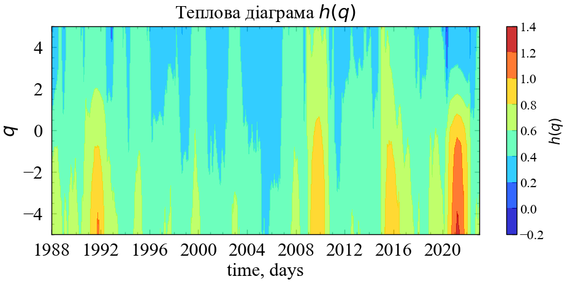
X, Y = np.meshgrid(np.arange(window, length, tstep), nq)
Z = np.array(h_q).T
plot_3d(X, Y, Z,
subtitle_jpg='3d_h(q)',
ylabel=r"$q$",
zlabel=r"$h(q)$",
cmap='jet')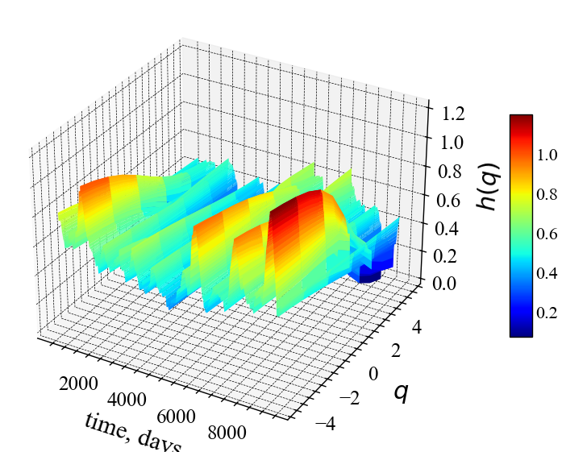
На представлений рисунках (Рис. 7.38 та Рис. 7.39) видно, що узагальнений показник Херста характеризується значним ростом саме в період криз. Особливо високим \(h(q)\) предстає для \(q < 0\), що говорить про значну персистентність малих флуктуацій у періоди турбулентності. Найвищим ступінь нелінійності в даному випадку представляють кризи 1992, 2008-2009, 2015-2016 та 2020-2021 років, що підтверджується й попередніми індикаторами.
7.2.14.2 Динаміка \(\tau(q)\) з ходом часу в дво- та тривимірному просторах
X, Y = np.meshgrid(time_ser.index[window:length:tstep], nq)
Z = np.array(tau_q).T
plot_2d(X, Y, Z,
subtitle_jpg='contour_tau(q)',
subtitle_fig=fr"Теплова діаграма $\tau(q)$",
ylabel=r"$q$",
barlabel=r"$\tau(q)$",
cmap='viridis',
lims=nq)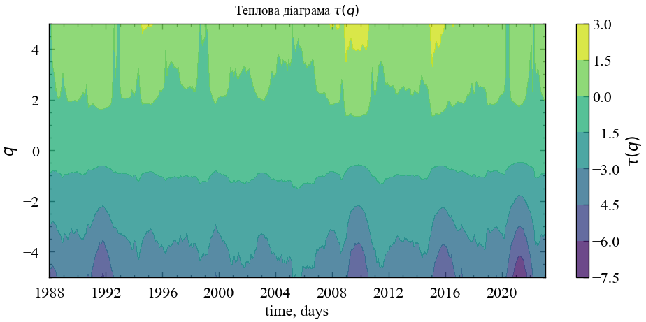
X, Y = np.meshgrid(np.arange(window, length, tstep), nq)
Z = np.array(tau_q).T
plot_3d(X, Y, Z,
subtitle_jpg='3d_tau(q)',
ylabel=r"$q$",
zlabel=r"$\tau(q)$",
cmap='viridis')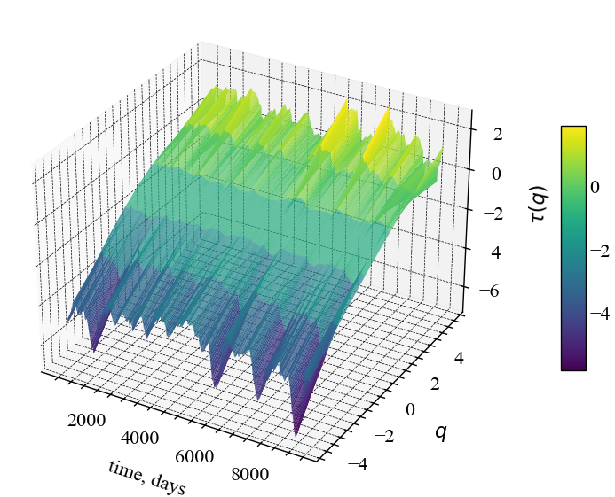
Як видно з представлений рисунків (Рис. 7.40 та Рис. 7.41), \(\tau(q)\) стає більш нелінійним для всіх значень \(q\). На кінцях хвостів цього індикатора можна помітити значні впадини, що можуть слугувати індикаторами крахових подій, але в порівнянні з тим же показником Херста даний індикатор є менш виразним.
7.2.14.3 Динаміка \(D(q)\) з ходом часу в дво- та тривимірному просторах
X, Y = np.meshgrid(time_ser.index[window:length:tstep], nq)
Z = np.array(D_q).T
plot_2d(X, Y, Z,
subtitle_jpg='contour_D(q)',
subtitle_fig=fr"Теплова діаграма $D(q)$",
ylabel=r"$q$",
barlabel=r"$D(q)$",
cmap='magma',
lims=nq)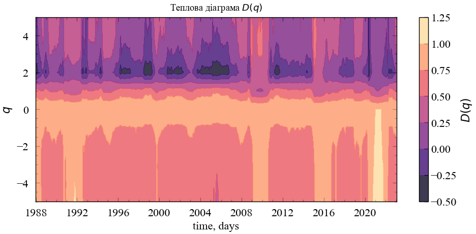
X, Y = np.meshgrid(np.arange(window, length, tstep), nq)
Z = np.array(D_q).T
plot_3d(X, Y, Z,
subtitle_jpg='3d_D(q)',
ylabel=r"$q$",
zlabel=r"$D(q)$",
cmap='magma')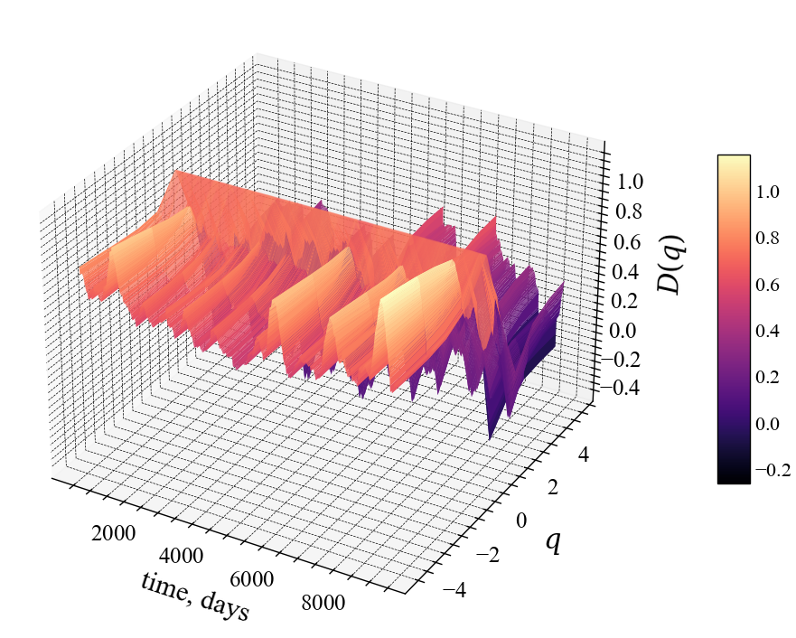
Дво- та тривимірні представлення узагальненої фрактальної розмірності показують, що \(D(q)\) зростає під час кризових подій. Узагальнена фрактальна розмірність також представляє найбільш індикативну динаміку для негативних значень \(q\), хоча для позитивних \(q\) також спостерігаються незначні коливання.
7.2.14.4 Динаміка \(C(q)\) в дво- та тривимірному просторах
X, Y = np.meshgrid(time_ser.index[window:length:tstep], nq)
Z = np.array(C_q).T
plot_2d(X, Y, Z,
subtitle_jpg='contour_C(q)',
subtitle_fig=fr"Теплова діаграма $C(q)$",
ylabel=r"$q$",
barlabel=r"$C(q)$",
cmap='hot',
lims=nq)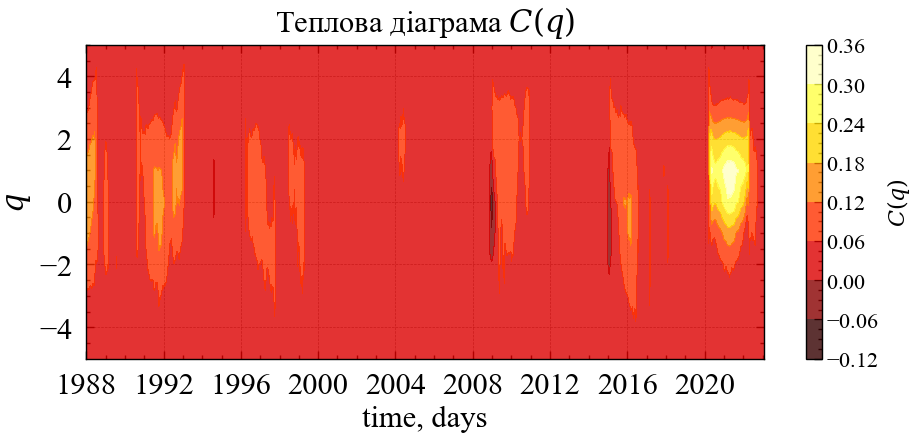
X, Y = np.meshgrid(np.arange(window, length, tstep), nq)
Z = np.array(C_q).T
plot_3d(X, Y, Z,
subtitle_jpg='3d_C(q)',
ylabel=r"$q$",
zlabel=r"$C(q)$",
cmap='hot')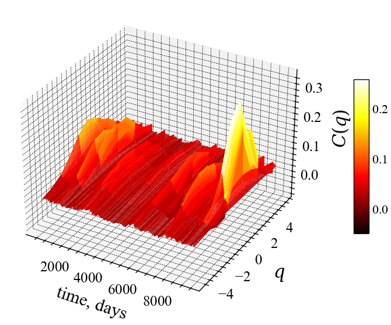
На даних рисунках (Рис. 7.44 та Рис. 7.45) під час кризових подій спостерігаються стрибки мультифрактальної теплоємності, що вказує аналогії фізичних фазових переходів та кризових подій. Можна бачити, що при різних ринкових режимах \(C(q)\) може бути симетричною, демонструючи рівномірний вплив на динаміку ринку як висококонцентрованих елементів, так і низькоконцентрованих. Також \(C(q)\) може зміщуватись як у ліву сторону, так і вправу, що говорить про мінливість ринку та впливовість різних початкових умов на його структуризацію.
7.2.14.5 Динаміка \(f(\alpha)\) з ходом часу в дво- та тривимірному просторах
X = time_ser.index[window:length:tstep].values
X = np.expand_dims(X, axis=1)
X = np.repeat(a=X, repeats=nq.shape[0], axis=1)
Y = np.array(alpha)
Z = np.array(mfSpect)
plot_2d(X, Y, Z,
subtitle_jpg='contour_f(alpha)',
subtitle_fig=fr"Теплова діаграма $f(\alpha)$",
ylabel=r"$\alpha$",
barlabel=r"$f(\alpha)$",
cmap='hsv',
lims=alpha)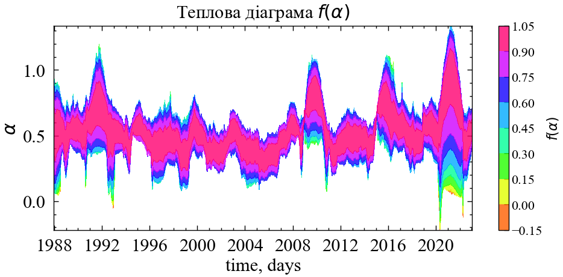
X = np.arange(window, length, tstep)
X = np.expand_dims(X, axis=1)
X = np.repeat(a=X, repeats=nq.shape[0], axis=1)
Y = np.array(alpha)
Z = np.array(mfSpect)
plot_3d(X, Y, Z,
subtitle_jpg='3d_f(alpha)',
ylabel=r"$\alpha$",
zlabel=r"$f(\alpha)$",
cmap='hsv')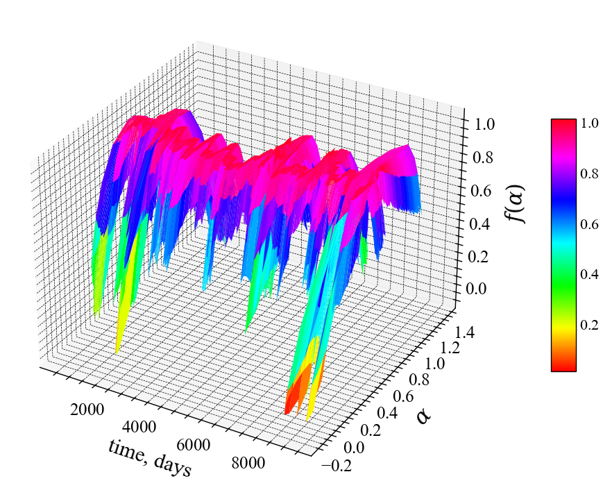
Як видно з останніх рисунків (Рис. 7.46 та Рис. 7.47), ширина спектра мультифрактальності змінюється у формі з плином часу, і стає ширшою під час кризових подій, що підтверджувалось таким індикатором як, наприклад, \(\Delta\alpha\). Видно, що у передкризові періоди зростає лівостороння асиметрія, що характеризує флуктуації значної амплітуди коливань. Самі кризи представляють зміщення \(f(\alpha)\) у праву сторону, що вказує на домінацію флуктуацій з малою амплітудою. У будь-якому разі, зростання ширини спектра є індикатором зростання ступеня самоорганізованості елементів, що залучені до досліджуваної системи. Тобто, як \(f(\alpha)\), так і попередні індикатори можна рекомендувати в якості індикаторів або індикаторів-передвісників кризових подій.
7.3 Завдання для виконання
- Вибрати із запропонованої бази даних варіант завдання
- Провести повний аналіз ряду за допомогою методу MF-DFA
- Дати інтерпретацію отриманим результатам
7.4 Контрольні запитання
- В чому переваги мультифрактальних характеристик у порівнянні з монофрактальними?
- На що вказує мультифрактальність часового ряду?
- Яким чином поводять себе різні характеристики, якщо ряд містить кризу?